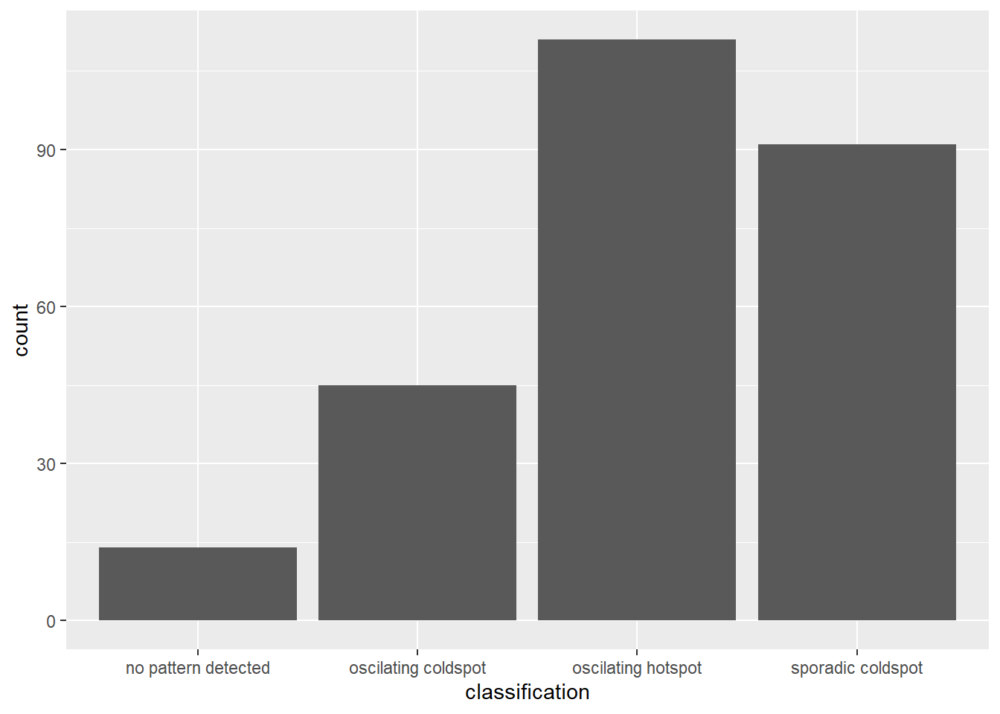
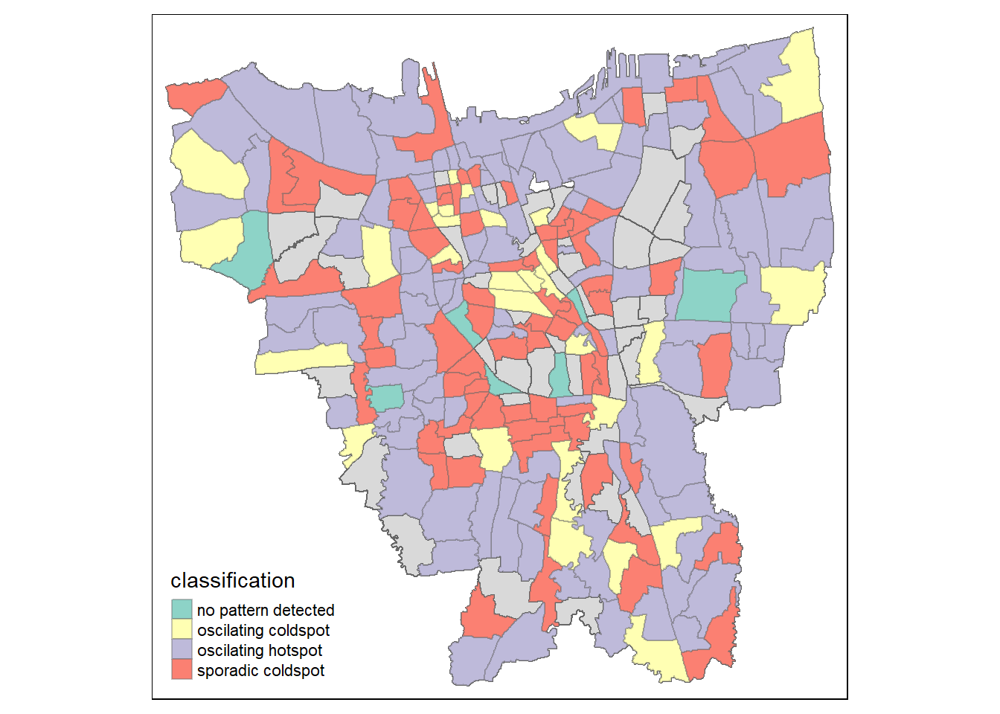

pacman::p_load(sf,tmap,tidyverse,sfdep,plotly,zoo,readxl,Kendall)Take-Home Exercise 2: Spatio-temporal Analysis of COVID-19 Vaccination Trends at the Sub-district level, DKI Jakarta
1. Overview
Since late December 2019, an outbreak of a novel coronavirus disease (COVID-19; previously known as 2019-nCoV) was reported in Wuhan, China, which had subsequently affected 210 countries worldwide. In general, COVID-19 is an acute resolved disease but it can also be deadly, with a 2% case fatality rate.
The COVID-19 vaccination in Indonesia is an ongoing mass immunisation in response to the COVID-19 pandemic in Indonesia. On 13 January 2021, the program commenced when President Joko Widodo was vaccinated at the presidential palace. In terms of total doses given, Indonesia ranks third in Asia and fifth in the world.
According to wikipedia, as of 5 February 2023 at 18:00 WIB (UTC+7), 204,266,655 people had received the first dose of the vaccine and 175,131,893 people had been fully vaccinated; 69,597,474 of them had been inoculated with the booster or the third dose, while 1,585,164 had received the fourth dose. Jakarta has the highest percentage of population fully vaccinated with 103.46%, followed by Bali and Special Region of Yogyakarta with 85.45% and 83.02% respectively.
1.1 Problem Statement & Objectives
Despite its compactness, the cumulative vaccination rate are not evenly distributed within DKI Jarkata. The question is where are the sub-districts with relatively higher number of vaccination rate and how they changed over time (July 2021 to June 2022).
Exploratory Spatial Data Analysis (ESDA) hold tremendous potential to address complex problems facing society. In this study, students are tasked to apply appropriate Local Indicators of Spatial Association (LISA) and Emerging Hot Spot Analysis (EHSA) to undercover the spatio-temporal trends of COVID-19 vaccination in DKI Jakarta.
2. Data Acquisition Source
Apstial data
For the purpose of this assignment, data from Riwayat File Vaksinasi DKI Jakarta will be used. Daily vaccination data are provides. You are only required to download either the first day of the month or last day of the month of the study period. I opted to download the last day of each month data during the period from July 2021 to June 2022.
Geospatial data
For the purpose of this study, DKI Jakarta administration boundary 2019 will be used. The data set can be downloaded at Indonesia Geospatial portal, specifically at this page.
Data summary table
| Type | Name | Format | Description |
|---|---|---|---|
| Geospatial | Shapefile (SHP) Batas Desa Provinsi DKI Jakarta | shapefile | Sub-districts in DKI Jakarta |
| Aspatial | Data Vaksinasi Berbasis Kelurahan dan Kecamatan (Monthly) | .xlsx | Sub-district level data of COVID-19 vaccine rates in DKI Jakarta between July 2021 and June 2022 |
3. Getting started
3.1 Installing and Loading the R packages
The R packages installed that we will be using for analysis are:
sf: used for importing, managing, and processing geospatial data
tmap: used for creating thematic maps, such as choropleth and bubble maps
tidyverse: a collection of packages for data science tasks
sfdep: An interface for ‘spdep’ to integrate with ‘sf’ objects and the ‘tidyverse’
plotly: used for creating interactive and dynamic visualisations in R
zoo: A popular package for working with time series data
readxl: read excel files (.xlsx)
Kendall: provide a set of tools for working with Kendall’s rank correlation coefficient
4. Data Wrangling: Geospatial Data & Aspatial Data
4.1 Importing Geospatial Data
bd_jakarta <- st_read(dsn="data/geospatial",
layer="BATAS_DESA_DESEMBER_2019_DUKCAPIL_DKI_JAKARTA")Reading layer `BATAS_DESA_DESEMBER_2019_DUKCAPIL_DKI_JAKARTA' from data source
`C:\G2wongkelly\IS415_GAA\Take_Home_Ex\Take_Home_Ex02_EndMonths\data\geospatial'
using driver `ESRI Shapefile'
Simple feature collection with 269 features and 161 fields
Geometry type: MULTIPOLYGON
Dimension: XY
Bounding box: xmin: 106.3831 ymin: -6.370815 xmax: 106.9728 ymax: -5.184322
Geodetic CRS: WGS 84From the output message, we learn that:
Geometry type is multipolygon
269 features and 161 fields
Assigned CRS is WGS 84 (geographic coordinate system)
Dimension is XY
4.1.1 Geospatial Data Pre-Processing (Cleaning)
Similar to our take-home assignment 1, before we can visualise our datasets and do the necessary analysis, we have to do data cleaning which is an important step in any data science task including geospatial data science. Things to check:
Invalid geometries
Missing value
(1) Invalid geometries
length(which(st_is_valid(bd_jakarta) == FALSE))[1] 0(2) Missing value
bd_jakarta[rowSums(is.na(bd_jakarta))!=0,]Simple feature collection with 2 features and 161 fields
Geometry type: MULTIPOLYGON
Dimension: XY
Bounding box: xmin: 106.8412 ymin: -6.154036 xmax: 106.8612 ymax: -6.144973
Geodetic CRS: WGS 84
OBJECT_ID KODE_DESA DESA KODE PROVINSI KAB_KOTA KECAMATAN
243 25645 31888888 DANAU SUNTER 318888 DKI JAKARTA <NA> <NA>
244 25646 31888888 DANAU SUNTER DLL 318888 DKI JAKARTA <NA> <NA>
DESA_KELUR JUMLAH_PEN JUMLAH_KK LUAS_WILAY KEPADATAN PERPINDAHA JUMLAH_MEN
243 <NA> 0 0 0 0 0 0
244 <NA> 0 0 0 0 0 0
PERUBAHAN WAJIB_KTP SILAM KRISTEN KHATOLIK HINDU BUDHA KONGHUCU KEPERCAYAA
243 0 0 0 0 0 0 0 0 0
244 0 0 0 0 0 0 0 0 0
PRIA WANITA BELUM_KAWI KAWIN CERAI_HIDU CERAI_MATI U0 U5 U10 U15 U20 U25
243 0 0 0 0 0 0 0 0 0 0 0 0
244 0 0 0 0 0 0 0 0 0 0 0 0
U30 U35 U40 U45 U50 U55 U60 U65 U70 U75 TIDAK_BELU BELUM_TAMA TAMAT_SD SLTP
243 0 0 0 0 0 0 0 0 0 0 0 0 0 0
244 0 0 0 0 0 0 0 0 0 0 0 0 0 0
SLTA DIPLOMA_I DIPLOMA_II DIPLOMA_IV STRATA_II STRATA_III BELUM_TIDA
243 0 0 0 0 0 0 0
244 0 0 0 0 0 0 0
APARATUR_P TENAGA_PEN WIRASWASTA PERTANIAN NELAYAN AGAMA_DAN PELAJAR_MA
243 0 0 0 0 0 0 0
244 0 0 0 0 0 0 0
TENAGA_KES PENSIUNAN LAINNYA GENERATED KODE_DES_1 BELUM_ MENGUR_ PELAJAR_
243 0 0 0 <NA> <NA> 0 0 0
244 0 0 0 <NA> <NA> 0 0 0
PENSIUNA_1 PEGAWAI_ TENTARA KEPOLISIAN PERDAG_ PETANI PETERN_ NELAYAN_1
243 0 0 0 0 0 0 0 0
244 0 0 0 0 0 0 0 0
INDUSTR_ KONSTR_ TRANSP_ KARYAW_ KARYAW1 KARYAW1_1 KARYAW1_12 BURUH BURUH_
243 0 0 0 0 0 0 0 0 0
244 0 0 0 0 0 0 0 0 0
BURUH1 BURUH1_1 PEMBANT_ TUKANG TUKANG_1 TUKANG_12 TUKANG__13 TUKANG__14
243 0 0 0 0 0 0 0 0
244 0 0 0 0 0 0 0 0
TUKANG__15 TUKANG__16 TUKANG__17 PENATA PENATA_ PENATA1_1 MEKANIK SENIMAN_
243 0 0 0 0 0 0 0 0
244 0 0 0 0 0 0 0 0
TABIB PARAJI_ PERANCA_ PENTER_ IMAM_M PENDETA PASTOR WARTAWAN USTADZ JURU_M
243 0 0 0 0 0 0 0 0 0 0
244 0 0 0 0 0 0 0 0 0 0
PROMOT ANGGOTA_ ANGGOTA1 ANGGOTA1_1 PRESIDEN WAKIL_PRES ANGGOTA1_2
243 0 0 0 0 0 0 0
244 0 0 0 0 0 0 0
ANGGOTA1_3 DUTA_B GUBERNUR WAKIL_GUBE BUPATI WAKIL_BUPA WALIKOTA WAKIL_WALI
243 0 0 0 0 0 0 0 0
244 0 0 0 0 0 0 0 0
ANGGOTA1_4 ANGGOTA1_5 DOSEN GURU PILOT PENGACARA_ NOTARIS ARSITEK AKUNTA_
243 0 0 0 0 0 0 0 0 0
244 0 0 0 0 0 0 0 0 0
KONSUL_ DOKTER BIDAN PERAWAT APOTEK_ PSIKIATER PENYIA_ PENYIA1 PELAUT
243 0 0 0 0 0 0 0 0 0
244 0 0 0 0 0 0 0 0 0
PENELITI SOPIR PIALAN PARANORMAL PEDAGA_ PERANG_ KEPALA_ BIARAW_ WIRASWAST_
243 0 0 0 0 0 0 0 0 0
244 0 0 0 0 0 0 0 0 0
LAINNYA_12 LUAS_DESA KODE_DES_3 DESA_KEL_1 KODE_12
243 0 0 <NA> <NA> 0
244 0 0 <NA> <NA> 0
geometry
243 MULTIPOLYGON (((106.8612 -6...
244 MULTIPOLYGON (((106.8504 -6...From the output generated above, we can tell that there are two particulars rows with missing values for KAB_KOTA (City), KECAMATAN (District), and DESA_KELUR (Village), as well as other fields such as OBJECT_ID 25645 and 25646. Therefore, we will need to remove them from the data.
#remove rows that have an NA value in DESA_KELUR
bd_jakarta <- na.omit(bd_jakarta,c("DESA_KELUR"))#check if there are any more missing values
bd_jakarta[rowSums(is.na(bd_jakarta))!=0,]Simple feature collection with 0 features and 161 fields
Bounding box: xmin: NA ymin: NA xmax: NA ymax: NA
Geodetic CRS: WGS 84
[1] OBJECT_ID KODE_DESA DESA KODE PROVINSI KAB_KOTA
[7] KECAMATAN DESA_KELUR JUMLAH_PEN JUMLAH_KK LUAS_WILAY KEPADATAN
[13] PERPINDAHA JUMLAH_MEN PERUBAHAN WAJIB_KTP SILAM KRISTEN
[19] KHATOLIK HINDU BUDHA KONGHUCU KEPERCAYAA PRIA
[25] WANITA BELUM_KAWI KAWIN CERAI_HIDU CERAI_MATI U0
[31] U5 U10 U15 U20 U25 U30
[37] U35 U40 U45 U50 U55 U60
[43] U65 U70 U75 TIDAK_BELU BELUM_TAMA TAMAT_SD
[49] SLTP SLTA DIPLOMA_I DIPLOMA_II DIPLOMA_IV STRATA_II
[55] STRATA_III BELUM_TIDA APARATUR_P TENAGA_PEN WIRASWASTA PERTANIAN
[61] NELAYAN AGAMA_DAN PELAJAR_MA TENAGA_KES PENSIUNAN LAINNYA
[67] GENERATED KODE_DES_1 BELUM_ MENGUR_ PELAJAR_ PENSIUNA_1
[73] PEGAWAI_ TENTARA KEPOLISIAN PERDAG_ PETANI PETERN_
[79] NELAYAN_1 INDUSTR_ KONSTR_ TRANSP_ KARYAW_ KARYAW1
[85] KARYAW1_1 KARYAW1_12 BURUH BURUH_ BURUH1 BURUH1_1
[91] PEMBANT_ TUKANG TUKANG_1 TUKANG_12 TUKANG__13 TUKANG__14
[97] TUKANG__15 TUKANG__16 TUKANG__17 PENATA PENATA_ PENATA1_1
[103] MEKANIK SENIMAN_ TABIB PARAJI_ PERANCA_ PENTER_
[109] IMAM_M PENDETA PASTOR WARTAWAN USTADZ JURU_M
[115] PROMOT ANGGOTA_ ANGGOTA1 ANGGOTA1_1 PRESIDEN WAKIL_PRES
[121] ANGGOTA1_2 ANGGOTA1_3 DUTA_B GUBERNUR WAKIL_GUBE BUPATI
[127] WAKIL_BUPA WALIKOTA WAKIL_WALI ANGGOTA1_4 ANGGOTA1_5 DOSEN
[133] GURU PILOT PENGACARA_ NOTARIS ARSITEK AKUNTA_
[139] KONSUL_ DOKTER BIDAN PERAWAT APOTEK_ PSIKIATER
[145] PENYIA_ PENYIA1 PELAUT PENELITI SOPIR PIALAN
[151] PARANORMAL PEDAGA_ PERANG_ KEPALA_ BIARAW_ WIRASWAST_
[157] LAINNYA_12 LUAS_DESA KODE_DES_3 DESA_KEL_1 KODE_12 geometry
<0 rows> (or 0-length row.names)Great! The data now is cleaned with no missing values! :)
4.1.2 Verifying & Data Transformation
Let’s firs retrieve the coordinate systems of bd_jakarta.
st_crs(bd_jakarta)Coordinate Reference System:
User input: WGS 84
wkt:
GEOGCRS["WGS 84",
DATUM["World Geodetic System 1984",
ELLIPSOID["WGS 84",6378137,298.257223563,
LENGTHUNIT["metre",1]]],
PRIMEM["Greenwich",0,
ANGLEUNIT["degree",0.0174532925199433]],
CS[ellipsoidal,2],
AXIS["latitude",north,
ORDER[1],
ANGLEUNIT["degree",0.0174532925199433]],
AXIS["longitude",east,
ORDER[2],
ANGLEUNIT["degree",0.0174532925199433]],
ID["EPSG",4326]]According to the output message above, we learn that the current assigned coordinate system is WGS 84, the “World Geodetic System 1984”. However, in the context of this data set, it is an Indonesian-specific geospatial data set. Therefore, we should be using the national CRS of Indonesia, DGN95, the “Datum Geodesi Nasional 1995”, ESPG code 23845. Let’s rectify that:
#transform WGS84 to DGN95, ESPG code 23845
bd_jakarta <- st_transform(bd_jakarta, 23845)
st_crs(bd_jakarta)Coordinate Reference System:
User input: EPSG:23845
wkt:
PROJCRS["DGN95 / Indonesia TM-3 zone 54.1",
BASEGEOGCRS["DGN95",
DATUM["Datum Geodesi Nasional 1995",
ELLIPSOID["WGS 84",6378137,298.257223563,
LENGTHUNIT["metre",1]]],
PRIMEM["Greenwich",0,
ANGLEUNIT["degree",0.0174532925199433]],
ID["EPSG",4755]],
CONVERSION["Indonesia TM-3 zone 54.1",
METHOD["Transverse Mercator",
ID["EPSG",9807]],
PARAMETER["Latitude of natural origin",0,
ANGLEUNIT["degree",0.0174532925199433],
ID["EPSG",8801]],
PARAMETER["Longitude of natural origin",139.5,
ANGLEUNIT["degree",0.0174532925199433],
ID["EPSG",8802]],
PARAMETER["Scale factor at natural origin",0.9999,
SCALEUNIT["unity",1],
ID["EPSG",8805]],
PARAMETER["False easting",200000,
LENGTHUNIT["metre",1],
ID["EPSG",8806]],
PARAMETER["False northing",1500000,
LENGTHUNIT["metre",1],
ID["EPSG",8807]]],
CS[Cartesian,2],
AXIS["easting (X)",east,
ORDER[1],
LENGTHUNIT["metre",1]],
AXIS["northing (Y)",north,
ORDER[2],
LENGTHUNIT["metre",1]],
USAGE[
SCOPE["Cadastre."],
AREA["Indonesia - onshore east of 138°E."],
BBOX[-9.19,138,-1.49,141.01]],
ID["EPSG",23845]]From the above output message, we can tell that the original coordinate system (WGS 84) has been successfully transformed to Indonesia coordinate system (DGN 95).
Now, let’s plot the geometry to quickly visualise the data.
4.1.3 Verifying & Removing Outer Islands
plot(st_geometry(bd_jakarta))
As we can see, bd_jakarta includes both the mainland and the outer islands. However, in the context of this assignment, we are not interested in the outer islands. Therefore, we can eliminate them out.
We will first output the unique values of PROVINSE (province) and KAB_KOTA (city) fields to inspect the distribution of clusters.
# outputs unique values of province and city fields
unique(bd_jakarta$"KAB_KOTA")[1] "JAKARTA BARAT" "JAKARTA PUSAT" "KEPULAUAN SERIBU" "JAKARTA UTARA"
[5] "JAKARTA TIMUR" "JAKARTA SELATAN" unique(bd_jakarta$"PROVINSI")[1] "DKI JAKARTA"Noticed from the output message above, the province are the same for all rows. However, as for KAB_KOTA, cities of Jakarta, realised that most of the cities have a JAKARTA prefix except for KEPULAUAN SERIBU (translated to ‘Thousand Islands’) refers to the outer islands. Just to check, we will plot the geometry of the geospatial data set once again with cluster of colours.
tm_shape(bd_jakarta) +
tm_polygons("KAB_KOTA")
Now we can clearly identify the outer islands and they are the “orange” mini clusters spreading outside the main islands. We will then remove them from our data set:
bd_jakarta <- filter(bd_jakarta, KAB_KOTA != "KEPULAUAN SERIBU")Let us check if they are all removed by plotting the map again!
tm_shape(bd_jakarta) +
tm_polygons("KAB_KOTA")
Yes! we have successfully excluded the outer islands from the map and left us with only the mainland which are the cities that start with the “JAKARTA” prefix.
4.1.4 Retaining relevant columns & Renaming them with translation (English)
There are too many columns in the date file bd_jakarta and we will need to only retain the fields that are relevant to our analysis which are the first 9 fields in the bd_jakarta data frame.
bd_jakarta <- bd_jakarta[, 0:9]Next, we need to also rename the retained columns to English language for ease of understanding for analysis later.
bd_jakarta <- bd_jakarta %>%
dplyr::rename(
Object_ID=OBJECT_ID,
Province=PROVINSI,
City=KAB_KOTA,
District=KECAMATAN,
Village_Code=KODE_DESA,
Village=DESA,
Sub_District=DESA_KELUR,
Code=KODE,
Total_Population=JUMLAH_PEN
)We are done with our Geospatial data processing and now let’s move on the Aspatial data!
4.2 Importing Aspatial Data
In our “data/aspatial” folder, we have multiple sub-district level data of COVID-19 cases in DKI Jarkata between July 2021 to June 2022. Therefore, we would want to find a more efficient way to import all of them instead of one by one.
In the code chunk below, the list.files() function is used to list all the files in the directory “data/aspatial/” that match the pattern “*.xlsx”. The resulting file names are stored in the xlsx_files variable.
The lapply() function is used to iterate over the elements of xlsx_files, i.e., the file names, and apply the function provided in the second argument to each element. The function provided reads in the Excel file using the read_xlsx() function from the readxl package and returns a data frame.
The resulting list of data frames is stored in the data_list variable.
xlsx_files <- list.files(path = "data/aspatial/", pattern = "*.xlsx")
data_list <- lapply(xlsx_files, function(file) {
read_xlsx(paste("data/aspatial/", file, sep = ""))
})4.2.1 Data Pre-Processing (Cleaning)
Firstly, let’s take a quick glance of all the data sets in the list of imported aspatial files.
data_list[[1]]
# A tibble: 268 × 27
KODE KELURA…¹ WILAY…² KECAM…³ KELUR…⁴ SASARAN BELUM…⁵ JUMLA…⁶ JUMLA…⁷ TOTAL…⁸
<chr> <chr> <chr> <chr> <dbl> <dbl> <dbl> <dbl> <dbl>
1 <NA> <NA> <NA> TOTAL 8941211 1517196 7424015 6590380 1.40e7
2 3172051003 JAKART… PADEMA… ANCOL 23947 4592 19355 16687 3.60e4
3 3173041007 JAKART… TAMBORA ANGKE 29381 5319 24062 20738 4.48e4
4 3175041005 JAKART… KRAMAT… BALE K… 29074 5903 23171 19754 4.29e4
5 3175031003 JAKART… JATINE… BALI M… 9752 1649 8103 7245 1.53e4
6 3175101006 JAKART… CIPAYU… BAMBU … 26285 4030 22255 20160 4.24e4
7 3174031002 JAKART… MAMPAN… BANGKA 21566 3950 17616 15662 3.33e4
8 3175051002 JAKART… PASAR … BARU 23886 3344 20542 18754 3.93e4
9 3175041004 JAKART… KRAMAT… BATU A… 47898 9382 38516 33404 7.19e4
10 3171071002 JAKART… TANAH … BENDUN… 21494 3772 17722 16033 3.38e4
# … with 258 more rows, 18 more variables: `LANSIA\r\nDOSIS 1` <dbl>,
# `LANSIA\r\nDOSIS 2` <dbl>, `LANSIA TOTAL \r\nVAKSIN DIBERIKAN` <dbl>,
# `PELAYAN PUBLIK\r\nDOSIS 1` <dbl>, `PELAYAN PUBLIK\r\nDOSIS 2` <dbl>,
# `PELAYAN PUBLIK TOTAL\r\nVAKSIN DIBERIKAN` <dbl>,
# `GOTONG ROYONG\r\nDOSIS 1` <dbl>, `GOTONG ROYONG\r\nDOSIS 2` <dbl>,
# `GOTONG ROYONG TOTAL\r\nVAKSIN DIBERIKAN` <dbl>,
# `TENAGA KESEHATAN\r\nDOSIS 1` <dbl>, `TENAGA KESEHATAN\r\nDOSIS 2` <dbl>, …
[[2]]
# A tibble: 268 × 34
KODE KELURA…¹ WILAY…² KECAM…³ KELUR…⁴ SASARAN BELUM…⁵ JUMLA…⁶ JUMLA…⁷ JUMLA…⁸
<chr> <chr> <chr> <chr> <dbl> <dbl> <dbl> <dbl> <dbl>
1 <NA> <NA> <NA> TOTAL 8941211 1453423 7487788 6727002 2720796
2 3172051003 JAKART… PADEMA… ANCOL 23947 4449 19498 17027 6568
3 3173041007 JAKART… TAMBORA ANGKE 29381 5101 24280 21134 8915
4 3175041005 JAKART… KRAMAT… BALE K… 29074 5699 23375 20315 6491
5 3175031003 JAKART… JATINE… BALI M… 9752 1598 8154 7395 3225
6 3175101006 JAKART… CIPAYU… BAMBU … 26285 3857 22428 20483 8166
7 3174031002 JAKART… MAMPAN… BANGKA 21566 3818 17748 15958 5494
8 3175051002 JAKART… PASAR … BARU 23886 3160 20726 19107 9336
9 3175041004 JAKART… KRAMAT… BATU A… 47898 9041 38857 34244 12107
10 3171071002 JAKART… TANAH … BENDUN… 21494 3627 17867 16306 7651
# … with 258 more rows, 25 more variables: `TOTAL VAKSIN\r\nDIBERIKAN` <dbl>,
# `LANSIA\r\nDOSIS 1` <dbl>, `LANSIA\r\nDOSIS 2` <dbl>,
# `LANSIA\r\nDOSIS 3` <dbl>, `LANSIA TOTAL \r\nVAKSIN DIBERIKAN` <dbl>,
# `PELAYAN PUBLIK\r\nDOSIS 1` <dbl>, `PELAYAN PUBLIK\r\nDOSIS 2` <dbl>,
# `PELAYAN PUBLIK\r\nDOSIS 3` <dbl>,
# `PELAYAN PUBLIK TOTAL\r\nVAKSIN DIBERIKAN` <dbl>,
# `GOTONG ROYONG\r\nDOSIS 1` <dbl>, `GOTONG ROYONG\r\nDOSIS 2` <dbl>, …
[[3]]
# A tibble: 268 × 34
KODE KELURA…¹ WILAY…² KECAM…³ KELUR…⁴ SASARAN BELUM…⁵ JUMLA…⁶ JUMLA…⁷ JUMLA…⁸
<chr> <chr> <chr> <chr> <dbl> <dbl> <dbl> <dbl> <dbl>
1 <NA> <NA> <NA> TOTAL 8941211 1431393 7509818 6756584 3031594
2 3172051003 JAKART… PADEMA… ANCOL 23947 4402 19545 17106 7369
3 3173041007 JAKART… TAMBORA ANGKE 29381 5041 24340 21213 10086
4 3175041005 JAKART… KRAMAT… BALE K… 29074 5632 23442 20416 7398
5 3175031003 JAKART… JATINE… BALI M… 9752 1576 8176 7427 3602
6 3175101006 JAKART… CIPAYU… BAMBU … 26285 3791 22494 20563 9190
7 3174031002 JAKART… MAMPAN… BANGKA 21566 3778 17788 16023 6170
8 3175051002 JAKART… PASAR … BARU 23886 3110 20776 19161 10067
9 3175041004 JAKART… KRAMAT… BATU A… 47898 8917 38981 34405 13732
10 3171071002 JAKART… TANAH … BENDUN… 21494 3580 17914 16378 8434
# … with 258 more rows, 25 more variables: `TOTAL VAKSIN\r\nDIBERIKAN` <dbl>,
# `LANSIA\r\nDOSIS 1` <dbl>, `LANSIA\r\nDOSIS 2` <dbl>,
# `LANSIA\r\nDOSIS 3` <dbl>, `LANSIA TOTAL \r\nVAKSIN DIBERIKAN` <dbl>,
# `PELAYAN PUBLIK\r\nDOSIS 1` <dbl>, `PELAYAN PUBLIK\r\nDOSIS 2` <dbl>,
# `PELAYAN PUBLIK\r\nDOSIS 3` <dbl>,
# `PELAYAN PUBLIK TOTAL\r\nVAKSIN DIBERIKAN` <dbl>,
# `GOTONG ROYONG\r\nDOSIS 1` <dbl>, `GOTONG ROYONG\r\nDOSIS 2` <dbl>, …
[[4]]
# A tibble: 268 × 27
KODE KELURA…¹ WILAY…² KECAM…³ KELUR…⁴ SASARAN BELUM…⁵ JUMLA…⁶ JUMLA…⁷ TOTAL…⁸
<chr> <chr> <chr> <chr> <dbl> <dbl> <dbl> <dbl> <dbl>
1 <NA> <NA> <NA> TOTAL 8941211 1723821 7217390 6172636 1.34e7
2 3172051003 JAKART… PADEMA… ANCOL 23947 5527 18420 15466 3.39e4
3 3173041007 JAKART… TAMBORA ANGKE 29381 5986 23395 19404 4.28e4
4 3175041005 JAKART… KRAMAT… BALE K… 29074 6802 22272 18084 4.04e4
5 3175031003 JAKART… JATINE… BALI M… 9752 1920 7832 6773 1.46e4
6 3175101006 JAKART… CIPAYU… BAMBU … 26285 4612 21673 18694 4.04e4
7 3174031002 JAKART… MAMPAN… BANGKA 21566 4346 17220 14694 3.19e4
8 3175051002 JAKART… PASAR … BARU 23886 3776 20110 17781 3.79e4
9 3175041004 JAKART… KRAMAT… BATU A… 47898 10985 36913 30676 6.76e4
10 3171071002 JAKART… TANAH … BENDUN… 21494 4187 17307 15114 3.24e4
# … with 258 more rows, 18 more variables: `LANSIA\r\nDOSIS 1` <dbl>,
# `LANSIA\r\nDOSIS 2` <dbl>, `LANSIA TOTAL \r\nVAKSIN DIBERIKAN` <dbl>,
# `PELAYAN PUBLIK\r\nDOSIS 1` <dbl>, `PELAYAN PUBLIK\r\nDOSIS 2` <dbl>,
# `PELAYAN PUBLIK TOTAL\r\nVAKSIN DIBERIKAN` <dbl>,
# `GOTONG ROYONG\r\nDOSIS 1` <dbl>, `GOTONG ROYONG\r\nDOSIS 2` <dbl>,
# `GOTONG ROYONG TOTAL\r\nVAKSIN DIBERIKAN` <dbl>,
# `TENAGA KESEHATAN\r\nDOSIS 1` <dbl>, `TENAGA KESEHATAN\r\nDOSIS 2` <dbl>, …
[[5]]
# A tibble: 268 × 27
KODE KELURA…¹ WILAY…² KECAM…³ KELUR…⁴ SASARAN BELUM…⁵ JUMLA…⁶ JUMLA…⁷ TOTAL…⁸
<chr> <chr> <chr> <chr> <dbl> <dbl> <dbl> <dbl> <dbl>
1 <NA> <NA> <NA> TOTAL 8941211 2235772 6705439 5171697 1.19e7
2 3172051003 JAKART… PADEMA… ANCOL 23947 6688 17259 13376 3.06e4
3 3173041007 JAKART… TAMBORA ANGKE 29381 7581 21800 16438 3.82e4
4 3175041005 JAKART… KRAMAT… BALE K… 29074 8708 20366 14412 3.48e4
5 3175031003 JAKART… JATINE… BALI M… 9752 2517 7235 5660 1.29e4
6 3175101006 JAKART… CIPAYU… BAMBU … 26285 6252 20033 15380 3.54e4
7 3174031002 JAKART… MAMPAN… BANGKA 21566 5785 15781 12158 2.79e4
8 3175051002 JAKART… PASAR … BARU 23886 4899 18987 15536 3.45e4
9 3175041004 JAKART… KRAMAT… BATU A… 47898 14105 33793 24706 5.85e4
10 3171071002 JAKART… TANAH … BENDUN… 21494 5239 16255 12764 2.90e4
# … with 258 more rows, 18 more variables: `LANSIA\r\nDOSIS 1` <dbl>,
# `LANSIA\r\nDOSIS 2` <dbl>, `LANSIA TOTAL \r\nVAKSIN DIBERIKAN` <dbl>,
# `PELAYAN PUBLIK\r\nDOSIS 1` <dbl>, `PELAYAN PUBLIK\r\nDOSIS 2` <dbl>,
# `PELAYAN PUBLIK TOTAL\r\nVAKSIN DIBERIKAN` <dbl>,
# `GOTONG ROYONG\r\nDOSIS 1` <dbl>, `GOTONG ROYONG\r\nDOSIS 2` <dbl>,
# `GOTONG ROYONG TOTAL\r\nVAKSIN DIBERIKAN` <dbl>,
# `TENAGA KESEHATAN\r\nDOSIS 1` <dbl>, `TENAGA KESEHATAN\r\nDOSIS 2` <dbl>, …
[[6]]
# A tibble: 268 × 27
KODE KELURA…¹ WILAY…² KECAM…³ KELUR…⁴ SASARAN BELUM…⁵ JUMLA…⁶ JUMLA…⁷ TOTAL…⁸
<chr> <chr> <chr> <chr> <dbl> <dbl> <dbl> <dbl> <dbl>
1 <NA> <NA> <NA> TOTAL 8941211 3277484 5663727 3412906 9076633
2 3172051003 JAKART… PADEMA… ANCOL 23947 9191 14756 8935 23691
3 3173041007 JAKART… TAMBORA ANGKE 29381 10400 18981 10470 29451
4 3175041005 JAKART… KRAMAT… BALE K… 29074 12510 16564 7766 24330
5 3175031003 JAKART… JATINE… BALI M… 9752 3704 6048 3671 9719
6 3175101006 JAKART… CIPAYU… BAMBU … 26285 9416 16869 10118 26987
7 3174031002 JAKART… MAMPAN… BANGKA 21566 8345 13221 8177 21398
8 3175051002 JAKART… PASAR … BARU 23886 7751 16135 11238 27373
9 3175041004 JAKART… KRAMAT… BATU A… 47898 19908 27990 15342 43332
10 3171071002 JAKART… TANAH … BENDUN… 21494 8033 13461 8671 22132
# … with 258 more rows, 18 more variables: `LANSIA\r\nDOSIS 1` <dbl>,
# `LANSIA\r\nDOSIS 2` <dbl>, `LANSIA TOTAL \r\nVAKSIN DIBERIKAN` <dbl>,
# `PELAYAN PUBLIK\r\nDOSIS 1` <dbl>, `PELAYAN PUBLIK\r\nDOSIS 2` <dbl>,
# `PELAYAN PUBLIK TOTAL\r\nVAKSIN DIBERIKAN` <dbl>,
# `GOTONG ROYONG\r\nDOSIS 1` <dbl>, `GOTONG ROYONG\r\nDOSIS 2` <dbl>,
# `GOTONG ROYONG TOTAL\r\nVAKSIN DIBERIKAN` <dbl>,
# `TENAGA KESEHATAN\r\nDOSIS 1` <dbl>, `TENAGA KESEHATAN\r\nDOSIS 2` <dbl>, …
[[7]]
# A tibble: 268 × 27
KODE KELURA…¹ WILAY…² KECAM…³ KELUR…⁴ SASARAN BELUM…⁵ JUMLA…⁶ JUMLA…⁷ TOTAL…⁸
<chr> <chr> <chr> <chr> <dbl> <dbl> <dbl> <dbl> <dbl>
1 <NA> <NA> <NA> TOTAL 8941211 1623736 7317475 6370175 1.37e7
2 3172051003 JAKART… PADEMA… ANCOL 23947 5062 18885 15996 3.49e4
3 3173041007 JAKART… TAMBORA ANGKE 29381 5626 23755 20026 4.38e4
4 3175041005 JAKART… KRAMAT… BALE K… 29074 6335 22739 18925 4.17e4
5 3175031003 JAKART… JATINE… BALI M… 9752 1782 7970 7003 1.50e4
6 3175101006 JAKART… CIPAYU… BAMBU … 26285 4373 21912 19400 4.13e4
7 3174031002 JAKART… MAMPAN… BANGKA 21566 4169 17397 15138 3.25e4
8 3175051002 JAKART… PASAR … BARU 23886 3579 20307 18239 3.85e4
9 3175041004 JAKART… KRAMAT… BATU A… 47898 10178 37720 32015 6.97e4
10 3171071002 JAKART… TANAH … BENDUN… 21494 3993 17501 15541 3.30e4
# … with 258 more rows, 18 more variables: `LANSIA\r\nDOSIS 1` <dbl>,
# `LANSIA\r\nDOSIS 2` <dbl>, `LANSIA TOTAL \r\nVAKSIN DIBERIKAN` <dbl>,
# `PELAYAN PUBLIK\r\nDOSIS 1` <dbl>, `PELAYAN PUBLIK\r\nDOSIS 2` <dbl>,
# `PELAYAN PUBLIK TOTAL\r\nVAKSIN DIBERIKAN` <dbl>,
# `GOTONG ROYONG\r\nDOSIS 1` <dbl>, `GOTONG ROYONG\r\nDOSIS 2` <dbl>,
# `GOTONG ROYONG TOTAL\r\nVAKSIN DIBERIKAN` <dbl>,
# `TENAGA KESEHATAN\r\nDOSIS 1` <dbl>, `TENAGA KESEHATAN\r\nDOSIS 2` <dbl>, …
[[8]]
# A tibble: 268 × 27
KODE KELURA…¹ WILAY…² KECAM…³ KELUR…⁴ SASARAN BELUM…⁵ JUMLA…⁶ JUMLA…⁷ TOTAL…⁸
<chr> <chr> <chr> <chr> <dbl> <dbl> <dbl> <dbl> <dbl>
1 <NA> <NA> <NA> TOTAL 8941211 1538221 7402990 6516678 1.39e7
2 3172051003 JAKART… PADEMA… ANCOL 23947 4647 19300 16477 3.58e4
3 3173041007 JAKART… TAMBORA ANGKE 29381 5388 23993 20463 4.45e4
4 3175041005 JAKART… KRAMAT… BALE K… 29074 5967 23107 19468 4.26e4
5 3175031003 JAKART… JATINE… BALI M… 9752 1678 8074 7176 1.52e4
6 3175101006 JAKART… CIPAYU… BAMBU … 26285 4077 22208 19966 4.22e4
7 3174031002 JAKART… MAMPAN… BANGKA 21566 3993 17573 15502 3.31e4
8 3175051002 JAKART… PASAR … BARU 23886 3398 20488 18580 3.91e4
9 3175041004 JAKART… KRAMAT… BATU A… 47898 9516 38382 32972 7.14e4
10 3171071002 JAKART… TANAH … BENDUN… 21494 3813 17681 15870 3.36e4
# … with 258 more rows, 18 more variables: `LANSIA\r\nDOSIS 1` <dbl>,
# `LANSIA\r\nDOSIS 2` <dbl>, `LANSIA TOTAL \r\nVAKSIN DIBERIKAN` <dbl>,
# `PELAYAN PUBLIK\r\nDOSIS 1` <dbl>, `PELAYAN PUBLIK\r\nDOSIS 2` <dbl>,
# `PELAYAN PUBLIK TOTAL\r\nVAKSIN DIBERIKAN` <dbl>,
# `GOTONG ROYONG\r\nDOSIS 1` <dbl>, `GOTONG ROYONG\r\nDOSIS 2` <dbl>,
# `GOTONG ROYONG TOTAL\r\nVAKSIN DIBERIKAN` <dbl>,
# `TENAGA KESEHATAN\r\nDOSIS 1` <dbl>, `TENAGA KESEHATAN\r\nDOSIS 2` <dbl>, …
[[9]]
# A tibble: 268 × 27
KODE KELURA…¹ WILAY…² KECAM…³ KELUR…⁴ SASARAN BELUM…⁵ JUMLA…⁶ JUMLA…⁷ TOTAL…⁸
<chr> <chr> <chr> <chr> <dbl> <dbl> <dbl> <dbl> <dbl>
1 <NA> <NA> <NA> TOTAL 8941211 4441501 4499710 1663218 6162928
2 3172051003 JAKART… PADEMA… ANCOL 23947 12333 11614 4181 15795
3 3173041007 JAKART… TAMBORA ANGKE 29381 13875 15506 4798 20304
4 3175041005 JAKART… KRAMAT… BALE K… 29074 18314 10760 3658 14418
5 3175031003 JAKART… JATINE… BALI M… 9752 5173 4579 2007 6586
6 3175101006 JAKART… CIPAYU… BAMBU … 26285 13775 12510 5206 17716
7 3174031002 JAKART… MAMPAN… BANGKA 21566 10443 11123 4010 15133
8 3175051002 JAKART… PASAR … BARU 23886 10063 13823 6118 19941
9 3175041004 JAKART… KRAMAT… BATU A… 47898 28848 19050 7261 26311
10 3171071002 JAKART… TANAH … BENDUN… 21494 9978 11516 4602 16118
# … with 258 more rows, 18 more variables: `LANSIA\r\nDOSIS 1` <dbl>,
# `LANSIA\r\nDOSIS 2` <dbl>, `LANSIA TOTAL \r\nVAKSIN DIBERIKAN` <dbl>,
# `PELAYAN PUBLIK\r\nDOSIS 1` <dbl>, `PELAYAN PUBLIK\r\nDOSIS 2` <dbl>,
# `PELAYAN PUBLIK TOTAL\r\nVAKSIN DIBERIKAN` <dbl>,
# `GOTONG ROYONG\r\nDOSIS 1` <dbl>, `GOTONG ROYONG\r\nDOSIS 2` <dbl>,
# `GOTONG ROYONG TOTAL\r\nVAKSIN DIBERIKAN` <dbl>,
# `TENAGA KESEHATAN\r\nDOSIS 1` <dbl>, `TENAGA KESEHATAN\r\nDOSIS 2` <dbl>, …
[[10]]
# A tibble: 268 × 34
KODE KELURA…¹ WILAY…² KECAM…³ KELUR…⁴ SASARAN BELUM…⁵ JUMLA…⁶ JUMLA…⁷ JUMLA…⁸
<chr> <chr> <chr> <chr> <dbl> <dbl> <dbl> <dbl> <dbl>
1 <NA> <NA> <NA> TOTAL 8941211 1482471 7458740 6682911 1836511
2 3172051003 JAKART… PADEMA… ANCOL 23947 4522 19425 16909 3934
3 3173041007 JAKART… TAMBORA ANGKE 29381 5186 24195 21000 6122
4 3175041005 JAKART… KRAMAT… BALE K… 29074 5780 23294 20123 4124
5 3175031003 JAKART… JATINE… BALI M… 9752 1621 8131 7332 2159
6 3175101006 JAKART… CIPAYU… BAMBU … 26285 3947 22338 20349 5258
7 3174031002 JAKART… MAMPAN… BANGKA 21566 3889 17677 15882 3835
8 3175051002 JAKART… PASAR … BARU 23886 3220 20666 18985 6863
9 3175041004 JAKART… KRAMAT… BATU A… 47898 9158 38740 33947 8039
10 3171071002 JAKART… TANAH … BENDUN… 21494 3693 17801 16227 5533
# … with 258 more rows, 25 more variables: `TOTAL VAKSIN\r\nDIBERIKAN` <dbl>,
# `LANSIA\r\nDOSIS 1` <dbl>, `LANSIA\r\nDOSIS 2` <dbl>,
# `LANSIA\r\nDOSIS 3` <dbl>, `LANSIA TOTAL \r\nVAKSIN DIBERIKAN` <dbl>,
# `PELAYAN PUBLIK\r\nDOSIS 1` <dbl>, `PELAYAN PUBLIK\r\nDOSIS 2` <dbl>,
# `PELAYAN PUBLIK\r\nDOSIS 3` <dbl>,
# `PELAYAN PUBLIK TOTAL\r\nVAKSIN DIBERIKAN` <dbl>,
# `GOTONG ROYONG\r\nDOSIS 1` <dbl>, `GOTONG ROYONG\r\nDOSIS 2` <dbl>, …
[[11]]
# A tibble: 268 × 34
KODE KELURA…¹ WILAY…² KECAM…³ KELUR…⁴ SASARAN BELUM…⁵ JUMLA…⁶ JUMLA…⁷ JUMLA…⁸
<chr> <chr> <chr> <chr> <dbl> <dbl> <dbl> <dbl> <dbl>
1 <NA> <NA> <NA> TOTAL 8941211 1445540 7495671 6743764 2885301
2 3172051003 JAKART… PADEMA… ANCOL 23947 4440 19507 17077 7022
3 3173041007 JAKART… TAMBORA ANGKE 29381 5084 24297 21182 9484
4 3175041005 JAKART… KRAMAT… BALE K… 29074 5676 23398 20373 7030
5 3175031003 JAKART… JATINE… BALI M… 9752 1589 8163 7413 3413
6 3175101006 JAKART… CIPAYU… BAMBU … 26285 3834 22451 20530 8594
7 3174031002 JAKART… MAMPAN… BANGKA 21566 3804 17762 15995 5825
8 3175051002 JAKART… PASAR … BARU 23886 3147 20739 19138 9781
9 3175041004 JAKART… KRAMAT… BATU A… 47898 8989 38909 34340 12984
10 3171071002 JAKART… TANAH … BENDUN… 21494 3609 17885 16349 8089
# … with 258 more rows, 25 more variables: `TOTAL VAKSIN\r\nDIBERIKAN` <dbl>,
# `LANSIA\r\nDOSIS 1` <dbl>, `LANSIA\r\nDOSIS 2` <dbl>,
# `LANSIA\r\nDOSIS 3` <dbl>, `LANSIA TOTAL \r\nVAKSIN DIBERIKAN` <dbl>,
# `PELAYAN PUBLIK\r\nDOSIS 1` <dbl>, `PELAYAN PUBLIK\r\nDOSIS 2` <dbl>,
# `PELAYAN PUBLIK\r\nDOSIS 3` <dbl>,
# `PELAYAN PUBLIK TOTAL\r\nVAKSIN DIBERIKAN` <dbl>,
# `GOTONG ROYONG\r\nDOSIS 1` <dbl>, `GOTONG ROYONG\r\nDOSIS 2` <dbl>, …
[[12]]
# A tibble: 268 × 27
KODE KELURA…¹ WILAY…² KECAM…³ KELUR…⁴ SASARAN BELUM…⁵ JUMLA…⁶ JUMLA…⁷ TOTAL…⁸
<chr> <chr> <chr> <chr> <dbl> <dbl> <dbl> <dbl> <dbl>
1 <NA> <NA> <NA> TOTAL 8941211 1880524 7060687 5729001 1.28e7
2 3172051003 JAKART… PADEMA… ANCOL 23947 5991 17956 14504 3.25e4
3 3173041007 JAKART… TAMBORA ANGKE 29381 6557 22824 18185 4.10e4
4 3175041005 JAKART… KRAMAT… BALE K… 29074 7586 21488 16444 3.79e4
5 3175031003 JAKART… JATINE… BALI M… 9752 2125 7627 6277 1.39e4
6 3175101006 JAKART… CIPAYU… BAMBU … 26285 5014 21271 17291 3.86e4
7 3174031002 JAKART… MAMPAN… BANGKA 21566 4742 16824 13579 3.04e4
8 3175051002 JAKART… PASAR … BARU 23886 4089 19797 16697 3.65e4
9 3175041004 JAKART… KRAMAT… BATU A… 47898 12196 35702 27942 6.36e4
10 3171071002 JAKART… TANAH … BENDUN… 21494 4492 17002 14176 3.12e4
# … with 258 more rows, 18 more variables: `LANSIA\r\nDOSIS 1` <dbl>,
# `LANSIA\r\nDOSIS 2` <dbl>, `LANSIA TOTAL \r\nVAKSIN DIBERIKAN` <dbl>,
# `PELAYAN PUBLIK\r\nDOSIS 1` <dbl>, `PELAYAN PUBLIK\r\nDOSIS 2` <dbl>,
# `PELAYAN PUBLIK TOTAL\r\nVAKSIN DIBERIKAN` <dbl>,
# `GOTONG ROYONG\r\nDOSIS 1` <dbl>, `GOTONG ROYONG\r\nDOSIS 2` <dbl>,
# `GOTONG ROYONG TOTAL\r\nVAKSIN DIBERIKAN` <dbl>,
# `TENAGA KESEHATAN\r\nDOSIS 1` <dbl>, `TENAGA KESEHATAN\r\nDOSIS 2` <dbl>, …Next, we are interested to know what are the columns available in each aspatial data file. Since we do not require all the columns, we then need to understand what are the columns needed for our analysis and retain them in the later part.
# get the column names for each data frame in data_list
column_names <- map(data_list, colnames)
column_names[[1]]
[1] "KODE KELURAHAN"
[2] "WILAYAH KOTA"
[3] "KECAMATAN"
[4] "KELURAHAN"
[5] "SASARAN"
[6] "BELUM VAKSIN"
[7] "JUMLAH\r\nDOSIS 1"
[8] "JUMLAH\r\nDOSIS 2"
[9] "TOTAL VAKSIN\r\nDIBERIKAN"
[10] "LANSIA\r\nDOSIS 1"
[11] "LANSIA\r\nDOSIS 2"
[12] "LANSIA TOTAL \r\nVAKSIN DIBERIKAN"
[13] "PELAYAN PUBLIK\r\nDOSIS 1"
[14] "PELAYAN PUBLIK\r\nDOSIS 2"
[15] "PELAYAN PUBLIK TOTAL\r\nVAKSIN DIBERIKAN"
[16] "GOTONG ROYONG\r\nDOSIS 1"
[17] "GOTONG ROYONG\r\nDOSIS 2"
[18] "GOTONG ROYONG TOTAL\r\nVAKSIN DIBERIKAN"
[19] "TENAGA KESEHATAN\r\nDOSIS 1"
[20] "TENAGA KESEHATAN\r\nDOSIS 2"
[21] "TENAGA KESEHATAN TOTAL\r\nVAKSIN DIBERIKAN"
[22] "TAHAPAN 3\r\nDOSIS 1"
[23] "TAHAPAN 3\r\nDOSIS 2"
[24] "TAHAPAN 3 TOTAL\r\nVAKSIN DIBERIKAN"
[25] "REMAJA\r\nDOSIS 1"
[26] "REMAJA\r\nDOSIS 2"
[27] "REMAJA TOTAL\r\nVAKSIN DIBERIKAN"
[[2]]
[1] "KODE KELURAHAN"
[2] "WILAYAH KOTA"
[3] "KECAMATAN"
[4] "KELURAHAN"
[5] "SASARAN"
[6] "BELUM VAKSIN"
[7] "JUMLAH\r\nDOSIS 1"
[8] "JUMLAH\r\nDOSIS 2"
[9] "JUMLAH\r\nDOSIS 3"
[10] "TOTAL VAKSIN\r\nDIBERIKAN"
[11] "LANSIA\r\nDOSIS 1"
[12] "LANSIA\r\nDOSIS 2"
[13] "LANSIA\r\nDOSIS 3"
[14] "LANSIA TOTAL \r\nVAKSIN DIBERIKAN"
[15] "PELAYAN PUBLIK\r\nDOSIS 1"
[16] "PELAYAN PUBLIK\r\nDOSIS 2"
[17] "PELAYAN PUBLIK\r\nDOSIS 3"
[18] "PELAYAN PUBLIK TOTAL\r\nVAKSIN DIBERIKAN"
[19] "GOTONG ROYONG\r\nDOSIS 1"
[20] "GOTONG ROYONG\r\nDOSIS 2"
[21] "GOTONG ROYONG\r\nDOSIS 3"
[22] "GOTONG ROYONG TOTAL\r\nVAKSIN DIBERIKAN"
[23] "TENAGA KESEHATAN\r\nDOSIS 1"
[24] "TENAGA KESEHATAN\r\nDOSIS 2"
[25] "TENAGA KESEHATAN\r\nDOSIS 3"
[26] "TENAGA KESEHATAN TOTAL\r\nVAKSIN DIBERIKAN"
[27] "TAHAPAN 3\r\nDOSIS 1"
[28] "TAHAPAN 3\r\nDOSIS 2"
[29] "TAHAPAN 3\r\nDOSIS 3"
[30] "TAHAPAN 3 TOTAL\r\nVAKSIN DIBERIKAN"
[31] "REMAJA\r\nDOSIS 1"
[32] "REMAJA\r\nDOSIS 2"
[33] "REMAJA\r\nDOSIS 3"
[34] "REMAJA TOTAL\r\nVAKSIN DIBERIKAN"
[[3]]
[1] "KODE KELURAHAN"
[2] "WILAYAH KOTA"
[3] "KECAMATAN"
[4] "KELURAHAN"
[5] "SASARAN"
[6] "BELUM VAKSIN"
[7] "JUMLAH\r\nDOSIS 1"
[8] "JUMLAH\r\nDOSIS 2"
[9] "JUMLAH\r\nDOSIS 3"
[10] "TOTAL VAKSIN\r\nDIBERIKAN"
[11] "LANSIA\r\nDOSIS 1"
[12] "LANSIA\r\nDOSIS 2"
[13] "LANSIA\r\nDOSIS 3"
[14] "LANSIA TOTAL \r\nVAKSIN DIBERIKAN"
[15] "PELAYAN PUBLIK\r\nDOSIS 1"
[16] "PELAYAN PUBLIK\r\nDOSIS 2"
[17] "PELAYAN PUBLIK\r\nDOSIS 3"
[18] "PELAYAN PUBLIK TOTAL\r\nVAKSIN DIBERIKAN"
[19] "GOTONG ROYONG\r\nDOSIS 1"
[20] "GOTONG ROYONG\r\nDOSIS 2"
[21] "GOTONG ROYONG\r\nDOSIS 3"
[22] "GOTONG ROYONG TOTAL\r\nVAKSIN DIBERIKAN"
[23] "TENAGA KESEHATAN\r\nDOSIS 1"
[24] "TENAGA KESEHATAN\r\nDOSIS 2"
[25] "TENAGA KESEHATAN\r\nDOSIS 3"
[26] "TENAGA KESEHATAN TOTAL\r\nVAKSIN DIBERIKAN"
[27] "TAHAPAN 3\r\nDOSIS 1"
[28] "TAHAPAN 3\r\nDOSIS 2"
[29] "TAHAPAN 3\r\nDOSIS 3"
[30] "TAHAPAN 3 TOTAL\r\nVAKSIN DIBERIKAN"
[31] "REMAJA\r\nDOSIS 1"
[32] "REMAJA\r\nDOSIS 2"
[33] "REMAJA\r\nDOSIS 3"
[34] "REMAJA TOTAL\r\nVAKSIN DIBERIKAN"
[[4]]
[1] "KODE KELURAHAN"
[2] "WILAYAH KOTA"
[3] "KECAMATAN"
[4] "KELURAHAN"
[5] "SASARAN"
[6] "BELUM VAKSIN"
[7] "JUMLAH\r\nDOSIS 1"
[8] "JUMLAH\r\nDOSIS 2"
[9] "TOTAL VAKSIN\r\nDIBERIKAN"
[10] "LANSIA\r\nDOSIS 1"
[11] "LANSIA\r\nDOSIS 2"
[12] "LANSIA TOTAL \r\nVAKSIN DIBERIKAN"
[13] "PELAYAN PUBLIK\r\nDOSIS 1"
[14] "PELAYAN PUBLIK\r\nDOSIS 2"
[15] "PELAYAN PUBLIK TOTAL\r\nVAKSIN DIBERIKAN"
[16] "GOTONG ROYONG\r\nDOSIS 1"
[17] "GOTONG ROYONG\r\nDOSIS 2"
[18] "GOTONG ROYONG TOTAL\r\nVAKSIN DIBERIKAN"
[19] "TENAGA KESEHATAN\r\nDOSIS 1"
[20] "TENAGA KESEHATAN\r\nDOSIS 2"
[21] "TENAGA KESEHATAN TOTAL\r\nVAKSIN DIBERIKAN"
[22] "TAHAPAN 3\r\nDOSIS 1"
[23] "TAHAPAN 3\r\nDOSIS 2"
[24] "TAHAPAN 3 TOTAL\r\nVAKSIN DIBERIKAN"
[25] "REMAJA\r\nDOSIS 1"
[26] "REMAJA\r\nDOSIS 2"
[27] "REMAJA TOTAL\r\nVAKSIN DIBERIKAN"
[[5]]
[1] "KODE KELURAHAN"
[2] "WILAYAH KOTA"
[3] "KECAMATAN"
[4] "KELURAHAN"
[5] "SASARAN"
[6] "BELUM VAKSIN"
[7] "JUMLAH\r\nDOSIS 1"
[8] "JUMLAH\r\nDOSIS 2"
[9] "TOTAL VAKSIN\r\nDIBERIKAN"
[10] "LANSIA\r\nDOSIS 1"
[11] "LANSIA\r\nDOSIS 2"
[12] "LANSIA TOTAL \r\nVAKSIN DIBERIKAN"
[13] "PELAYAN PUBLIK\r\nDOSIS 1"
[14] "PELAYAN PUBLIK\r\nDOSIS 2"
[15] "PELAYAN PUBLIK TOTAL\r\nVAKSIN DIBERIKAN"
[16] "GOTONG ROYONG\r\nDOSIS 1"
[17] "GOTONG ROYONG\r\nDOSIS 2"
[18] "GOTONG ROYONG TOTAL\r\nVAKSIN DIBERIKAN"
[19] "TENAGA KESEHATAN\r\nDOSIS 1"
[20] "TENAGA KESEHATAN\r\nDOSIS 2"
[21] "TENAGA KESEHATAN TOTAL\r\nVAKSIN DIBERIKAN"
[22] "TAHAPAN 3\r\nDOSIS 1"
[23] "TAHAPAN 3\r\nDOSIS 2"
[24] "TAHAPAN 3 TOTAL\r\nVAKSIN DIBERIKAN"
[25] "REMAJA\r\nDOSIS 1"
[26] "REMAJA\r\nDOSIS 2"
[27] "REMAJA TOTAL\r\nVAKSIN DIBERIKAN"
[[6]]
[1] "KODE KELURAHAN"
[2] "WILAYAH KOTA"
[3] "KECAMATAN"
[4] "KELURAHAN"
[5] "SASARAN"
[6] "BELUM VAKSIN"
[7] "JUMLAH\r\nDOSIS 1"
[8] "JUMLAH\r\nDOSIS 2"
[9] "TOTAL VAKSIN\r\nDIBERIKAN"
[10] "LANSIA\r\nDOSIS 1"
[11] "LANSIA\r\nDOSIS 2"
[12] "LANSIA TOTAL \r\nVAKSIN DIBERIKAN"
[13] "PELAYAN PUBLIK\r\nDOSIS 1"
[14] "PELAYAN PUBLIK\r\nDOSIS 2"
[15] "PELAYAN PUBLIK TOTAL\r\nVAKSIN DIBERIKAN"
[16] "GOTONG ROYONG\r\nDOSIS 1"
[17] "GOTONG ROYONG\r\nDOSIS 2"
[18] "GOTONG ROYONG TOTAL\r\nVAKSIN DIBERIKAN"
[19] "TENAGA KESEHATAN\r\nDOSIS 1"
[20] "TENAGA KESEHATAN\r\nDOSIS 2"
[21] "TENAGA KESEHATAN TOTAL\r\nVAKSIN DIBERIKAN"
[22] "TAHAPAN 3\r\nDOSIS 1"
[23] "TAHAPAN 3\r\nDOSIS 2"
[24] "TAHAPAN 3 TOTAL\r\nVAKSIN DIBERIKAN"
[25] "REMAJA\r\nDOSIS 1"
[26] "REMAJA\r\nDOSIS 2"
[27] "REMAJA TOTAL\r\nVAKSIN DIBERIKAN"
[[7]]
[1] "KODE KELURAHAN"
[2] "WILAYAH KOTA"
[3] "KECAMATAN"
[4] "KELURAHAN"
[5] "SASARAN"
[6] "BELUM VAKSIN"
[7] "JUMLAH\r\nDOSIS 1"
[8] "JUMLAH\r\nDOSIS 2"
[9] "TOTAL VAKSIN\r\nDIBERIKAN"
[10] "LANSIA\r\nDOSIS 1"
[11] "LANSIA\r\nDOSIS 2"
[12] "LANSIA TOTAL \r\nVAKSIN DIBERIKAN"
[13] "PELAYAN PUBLIK\r\nDOSIS 1"
[14] "PELAYAN PUBLIK\r\nDOSIS 2"
[15] "PELAYAN PUBLIK TOTAL\r\nVAKSIN DIBERIKAN"
[16] "GOTONG ROYONG\r\nDOSIS 1"
[17] "GOTONG ROYONG\r\nDOSIS 2"
[18] "GOTONG ROYONG TOTAL\r\nVAKSIN DIBERIKAN"
[19] "TENAGA KESEHATAN\r\nDOSIS 1"
[20] "TENAGA KESEHATAN\r\nDOSIS 2"
[21] "TENAGA KESEHATAN TOTAL\r\nVAKSIN DIBERIKAN"
[22] "TAHAPAN 3\r\nDOSIS 1"
[23] "TAHAPAN 3\r\nDOSIS 2"
[24] "TAHAPAN 3 TOTAL\r\nVAKSIN DIBERIKAN"
[25] "REMAJA\r\nDOSIS 1"
[26] "REMAJA\r\nDOSIS 2"
[27] "REMAJA TOTAL\r\nVAKSIN DIBERIKAN"
[[8]]
[1] "KODE KELURAHAN"
[2] "WILAYAH KOTA"
[3] "KECAMATAN"
[4] "KELURAHAN"
[5] "SASARAN"
[6] "BELUM VAKSIN"
[7] "JUMLAH\r\nDOSIS 1"
[8] "JUMLAH\r\nDOSIS 2"
[9] "TOTAL VAKSIN\r\nDIBERIKAN"
[10] "LANSIA\r\nDOSIS 1"
[11] "LANSIA\r\nDOSIS 2"
[12] "LANSIA TOTAL \r\nVAKSIN DIBERIKAN"
[13] "PELAYAN PUBLIK\r\nDOSIS 1"
[14] "PELAYAN PUBLIK\r\nDOSIS 2"
[15] "PELAYAN PUBLIK TOTAL\r\nVAKSIN DIBERIKAN"
[16] "GOTONG ROYONG\r\nDOSIS 1"
[17] "GOTONG ROYONG\r\nDOSIS 2"
[18] "GOTONG ROYONG TOTAL\r\nVAKSIN DIBERIKAN"
[19] "TENAGA KESEHATAN\r\nDOSIS 1"
[20] "TENAGA KESEHATAN\r\nDOSIS 2"
[21] "TENAGA KESEHATAN TOTAL\r\nVAKSIN DIBERIKAN"
[22] "TAHAPAN 3\r\nDOSIS 1"
[23] "TAHAPAN 3\r\nDOSIS 2"
[24] "TAHAPAN 3 TOTAL\r\nVAKSIN DIBERIKAN"
[25] "REMAJA\r\nDOSIS 1"
[26] "REMAJA\r\nDOSIS 2"
[27] "REMAJA TOTAL\r\nVAKSIN DIBERIKAN"
[[9]]
[1] "KODE KELURAHAN"
[2] "WILAYAH KOTA"
[3] "KECAMATAN"
[4] "KELURAHAN"
[5] "SASARAN"
[6] "BELUM VAKSIN"
[7] "JUMLAH\r\nDOSIS 1"
[8] "JUMLAH\r\nDOSIS 2"
[9] "TOTAL VAKSIN\r\nDIBERIKAN"
[10] "LANSIA\r\nDOSIS 1"
[11] "LANSIA\r\nDOSIS 2"
[12] "LANSIA TOTAL \r\nVAKSIN DIBERIKAN"
[13] "PELAYAN PUBLIK\r\nDOSIS 1"
[14] "PELAYAN PUBLIK\r\nDOSIS 2"
[15] "PELAYAN PUBLIK TOTAL\r\nVAKSIN DIBERIKAN"
[16] "GOTONG ROYONG\r\nDOSIS 1"
[17] "GOTONG ROYONG\r\nDOSIS 2"
[18] "GOTONG ROYONG TOTAL\r\nVAKSIN DIBERIKAN"
[19] "TENAGA KESEHATAN\r\nDOSIS 1"
[20] "TENAGA KESEHATAN\r\nDOSIS 2"
[21] "TENAGA KESEHATAN TOTAL\r\nVAKSIN DIBERIKAN"
[22] "TAHAPAN 3\r\nDOSIS 1"
[23] "TAHAPAN 3\r\nDOSIS 2"
[24] "TAHAPAN 3 TOTAL\r\nVAKSIN DIBERIKAN"
[25] "REMAJA\r\nDOSIS 1"
[26] "REMAJA\r\nDOSIS 2"
[27] "REMAJA TOTAL\r\nVAKSIN DIBERIKAN"
[[10]]
[1] "KODE KELURAHAN"
[2] "WILAYAH KOTA"
[3] "KECAMATAN"
[4] "KELURAHAN"
[5] "SASARAN"
[6] "BELUM VAKSIN"
[7] "JUMLAH\r\nDOSIS 1"
[8] "JUMLAH\r\nDOSIS 2"
[9] "JUMLAH\r\nDOSIS 3"
[10] "TOTAL VAKSIN\r\nDIBERIKAN"
[11] "LANSIA\r\nDOSIS 1"
[12] "LANSIA\r\nDOSIS 2"
[13] "LANSIA\r\nDOSIS 3"
[14] "LANSIA TOTAL \r\nVAKSIN DIBERIKAN"
[15] "PELAYAN PUBLIK\r\nDOSIS 1"
[16] "PELAYAN PUBLIK\r\nDOSIS 2"
[17] "PELAYAN PUBLIK\r\nDOSIS 3"
[18] "PELAYAN PUBLIK TOTAL\r\nVAKSIN DIBERIKAN"
[19] "GOTONG ROYONG\r\nDOSIS 1"
[20] "GOTONG ROYONG\r\nDOSIS 2"
[21] "GOTONG ROYONG\r\nDOSIS 3"
[22] "GOTONG ROYONG TOTAL\r\nVAKSIN DIBERIKAN"
[23] "TENAGA KESEHATAN\r\nDOSIS 1"
[24] "TENAGA KESEHATAN\r\nDOSIS 2"
[25] "TENAGA KESEHATAN\r\nDOSIS 3"
[26] "TENAGA KESEHATAN TOTAL\r\nVAKSIN DIBERIKAN"
[27] "TAHAPAN 3\r\nDOSIS 1"
[28] "TAHAPAN 3\r\nDOSIS 2"
[29] "TAHAPAN 3\r\nDOSIS 3"
[30] "TAHAPAN 3 TOTAL\r\nVAKSIN DIBERIKAN"
[31] "REMAJA\r\nDOSIS 1"
[32] "REMAJA\r\nDOSIS 2"
[33] "REMAJA\r\nDOSIS 3"
[34] "REMAJA TOTAL\r\nVAKSIN DIBERIKAN"
[[11]]
[1] "KODE KELURAHAN"
[2] "WILAYAH KOTA"
[3] "KECAMATAN"
[4] "KELURAHAN"
[5] "SASARAN"
[6] "BELUM VAKSIN"
[7] "JUMLAH\r\nDOSIS 1"
[8] "JUMLAH\r\nDOSIS 2"
[9] "JUMLAH\r\nDOSIS 3"
[10] "TOTAL VAKSIN\r\nDIBERIKAN"
[11] "LANSIA\r\nDOSIS 1"
[12] "LANSIA\r\nDOSIS 2"
[13] "LANSIA\r\nDOSIS 3"
[14] "LANSIA TOTAL \r\nVAKSIN DIBERIKAN"
[15] "PELAYAN PUBLIK\r\nDOSIS 1"
[16] "PELAYAN PUBLIK\r\nDOSIS 2"
[17] "PELAYAN PUBLIK\r\nDOSIS 3"
[18] "PELAYAN PUBLIK TOTAL\r\nVAKSIN DIBERIKAN"
[19] "GOTONG ROYONG\r\nDOSIS 1"
[20] "GOTONG ROYONG\r\nDOSIS 2"
[21] "GOTONG ROYONG\r\nDOSIS 3"
[22] "GOTONG ROYONG TOTAL\r\nVAKSIN DIBERIKAN"
[23] "TENAGA KESEHATAN\r\nDOSIS 1"
[24] "TENAGA KESEHATAN\r\nDOSIS 2"
[25] "TENAGA KESEHATAN\r\nDOSIS 3"
[26] "TENAGA KESEHATAN TOTAL\r\nVAKSIN DIBERIKAN"
[27] "TAHAPAN 3\r\nDOSIS 1"
[28] "TAHAPAN 3\r\nDOSIS 2"
[29] "TAHAPAN 3\r\nDOSIS 3"
[30] "TAHAPAN 3 TOTAL\r\nVAKSIN DIBERIKAN"
[31] "REMAJA\r\nDOSIS 1"
[32] "REMAJA\r\nDOSIS 2"
[33] "REMAJA\r\nDOSIS 3"
[34] "REMAJA TOTAL\r\nVAKSIN DIBERIKAN"
[[12]]
[1] "KODE KELURAHAN"
[2] "WILAYAH KOTA"
[3] "KECAMATAN"
[4] "KELURAHAN"
[5] "SASARAN"
[6] "BELUM VAKSIN"
[7] "JUMLAH\r\nDOSIS 1"
[8] "JUMLAH\r\nDOSIS 2"
[9] "TOTAL VAKSIN\r\nDIBERIKAN"
[10] "LANSIA\r\nDOSIS 1"
[11] "LANSIA\r\nDOSIS 2"
[12] "LANSIA TOTAL \r\nVAKSIN DIBERIKAN"
[13] "PELAYAN PUBLIK\r\nDOSIS 1"
[14] "PELAYAN PUBLIK\r\nDOSIS 2"
[15] "PELAYAN PUBLIK TOTAL\r\nVAKSIN DIBERIKAN"
[16] "GOTONG ROYONG\r\nDOSIS 1"
[17] "GOTONG ROYONG\r\nDOSIS 2"
[18] "GOTONG ROYONG TOTAL\r\nVAKSIN DIBERIKAN"
[19] "TENAGA KESEHATAN\r\nDOSIS 1"
[20] "TENAGA KESEHATAN\r\nDOSIS 2"
[21] "TENAGA KESEHATAN TOTAL\r\nVAKSIN DIBERIKAN"
[22] "TAHAPAN 3\r\nDOSIS 1"
[23] "TAHAPAN 3\r\nDOSIS 2"
[24] "TAHAPAN 3 TOTAL\r\nVAKSIN DIBERIKAN"
[25] "REMAJA\r\nDOSIS 1"
[26] "REMAJA\r\nDOSIS 2"
[27] "REMAJA TOTAL\r\nVAKSIN DIBERIKAN" From the generated output message, I realised the differences were due to column names such as: ” DOSIS 3”. The reason could be due to the government’s increasing immunization rates for various demographic groups and the quantity of vaccinations distributed across the country.
However, the primary interest in this study is to analyse COVID-19 vaccination trends at the sub-district level, DKI Jakarta. Therefore, the breakdown of different demographics vaccination progress are less of our concern and we should eliminate them from the data sets.
Our columns of interest (those that are relevant to our analysis and we will keep) -> they are common in all data files therefore we can extract them:
Kode Kelurahan (Village Code)
Wilayah Kota (City Area)
Kelurahan (Sub-District)
Sasaran (Target)
Belum Vaksin (Not Yet Vaccinated)
Total Vaksin Diberikan (Total Vaccine Given)
Now that we know our requirements, we can process the data step-by-step:
Step 1: Retain only the 6 relevant columns for all 12 data sets imported earlier
In this code, the map() function iterates through each data frame in the list my_data and applies the select() function to select the stated column names. The resulting list of data frames is stored in the variable my_data_same_columns.
my_data_same_columns <- map(data_list, ~select(.x, "KODE KELURAHAN", "WILAYAH KOTA","SASARAN","KELURAHAN","BELUM VAKSIN","TOTAL VAKSIN\r\nDIBERIKAN"))
my_data_same_columns[[1]]
# A tibble: 268 × 6
`KODE KELURAHAN` `WILAYAH KOTA` SASARAN KELURAHAN BELUM VAKS…¹ TOTAL…²
<chr> <chr> <dbl> <chr> <dbl> <dbl>
1 <NA> <NA> 8941211 TOTAL 1517196 1.40e7
2 3172051003 JAKARTA UTARA 23947 ANCOL 4592 3.60e4
3 3173041007 JAKARTA BARAT 29381 ANGKE 5319 4.48e4
4 3175041005 JAKARTA TIMUR 29074 BALE KAMBANG 5903 4.29e4
5 3175031003 JAKARTA TIMUR 9752 BALI MESTER 1649 1.53e4
6 3175101006 JAKARTA TIMUR 26285 BAMBU APUS 4030 4.24e4
7 3174031002 JAKARTA SELATAN 21566 BANGKA 3950 3.33e4
8 3175051002 JAKARTA TIMUR 23886 BARU 3344 3.93e4
9 3175041004 JAKARTA TIMUR 47898 BATU AMPAR 9382 7.19e4
10 3171071002 JAKARTA PUSAT 21494 BENDUNGAN HILIR 3772 3.38e4
# … with 258 more rows, and abbreviated variable names ¹`BELUM VAKSIN`,
# ²`TOTAL VAKSIN\r\nDIBERIKAN`
[[2]]
# A tibble: 268 × 6
`KODE KELURAHAN` `WILAYAH KOTA` SASARAN KELURAHAN BELUM VAKS…¹ TOTAL…²
<chr> <chr> <dbl> <chr> <dbl> <dbl>
1 <NA> <NA> 8941211 TOTAL 1453423 1.69e7
2 3172051003 JAKARTA UTARA 23947 ANCOL 4449 4.31e4
3 3173041007 JAKARTA BARAT 29381 ANGKE 5101 5.43e4
4 3175041005 JAKARTA TIMUR 29074 BALE KAMBANG 5699 5.02e4
5 3175031003 JAKARTA TIMUR 9752 BALI MESTER 1598 1.88e4
6 3175101006 JAKARTA TIMUR 26285 BAMBU APUS 3857 5.11e4
7 3174031002 JAKARTA SELATAN 21566 BANGKA 3818 3.92e4
8 3175051002 JAKARTA TIMUR 23886 BARU 3160 4.92e4
9 3175041004 JAKARTA TIMUR 47898 BATU AMPAR 9041 8.52e4
10 3171071002 JAKARTA PUSAT 21494 BENDUNGAN HILIR 3627 4.18e4
# … with 258 more rows, and abbreviated variable names ¹`BELUM VAKSIN`,
# ²`TOTAL VAKSIN\r\nDIBERIKAN`
[[3]]
# A tibble: 268 × 6
`KODE KELURAHAN` `WILAYAH KOTA` SASARAN KELURAHAN BELUM VAKS…¹ TOTAL…²
<chr> <chr> <dbl> <chr> <dbl> <dbl>
1 <NA> <NA> 8941211 TOTAL 1431393 1.73e7
2 3172051003 JAKARTA UTARA 23947 ANCOL 4402 4.40e4
3 3173041007 JAKARTA BARAT 29381 ANGKE 5041 5.56e4
4 3175041005 JAKARTA TIMUR 29074 BALE KAMBANG 5632 5.13e4
5 3175031003 JAKARTA TIMUR 9752 BALI MESTER 1576 1.92e4
6 3175101006 JAKARTA TIMUR 26285 BAMBU APUS 3791 5.22e4
7 3174031002 JAKARTA SELATAN 21566 BANGKA 3778 4.00e4
8 3175051002 JAKARTA TIMUR 23886 BARU 3110 5.00e4
9 3175041004 JAKARTA TIMUR 47898 BATU AMPAR 8917 8.71e4
10 3171071002 JAKARTA PUSAT 21494 BENDUNGAN HILIR 3580 4.27e4
# … with 258 more rows, and abbreviated variable names ¹`BELUM VAKSIN`,
# ²`TOTAL VAKSIN\r\nDIBERIKAN`
[[4]]
# A tibble: 268 × 6
`KODE KELURAHAN` `WILAYAH KOTA` SASARAN KELURAHAN BELUM VAKS…¹ TOTAL…²
<chr> <chr> <dbl> <chr> <dbl> <dbl>
1 <NA> <NA> 8941211 TOTAL 1723821 1.34e7
2 3172051003 JAKARTA UTARA 23947 ANCOL 5527 3.39e4
3 3173041007 JAKARTA BARAT 29381 ANGKE 5986 4.28e4
4 3175041005 JAKARTA TIMUR 29074 BALE KAMBANG 6802 4.04e4
5 3175031003 JAKARTA TIMUR 9752 BALI MESTER 1920 1.46e4
6 3175101006 JAKARTA TIMUR 26285 BAMBU APUS 4612 4.04e4
7 3174031002 JAKARTA SELATAN 21566 BANGKA 4346 3.19e4
8 3175051002 JAKARTA TIMUR 23886 BARU 3776 3.79e4
9 3175041004 JAKARTA TIMUR 47898 BATU AMPAR 10985 6.76e4
10 3171071002 JAKARTA PUSAT 21494 BENDUNGAN HILIR 4187 3.24e4
# … with 258 more rows, and abbreviated variable names ¹`BELUM VAKSIN`,
# ²`TOTAL VAKSIN\r\nDIBERIKAN`
[[5]]
# A tibble: 268 × 6
`KODE KELURAHAN` `WILAYAH KOTA` SASARAN KELURAHAN BELUM VAKS…¹ TOTAL…²
<chr> <chr> <dbl> <chr> <dbl> <dbl>
1 <NA> <NA> 8941211 TOTAL 2235772 1.19e7
2 3172051003 JAKARTA UTARA 23947 ANCOL 6688 3.06e4
3 3173041007 JAKARTA BARAT 29381 ANGKE 7581 3.82e4
4 3175041005 JAKARTA TIMUR 29074 BALE KAMBANG 8708 3.48e4
5 3175031003 JAKARTA TIMUR 9752 BALI MESTER 2517 1.29e4
6 3175101006 JAKARTA TIMUR 26285 BAMBU APUS 6252 3.54e4
7 3174031002 JAKARTA SELATAN 21566 BANGKA 5785 2.79e4
8 3175051002 JAKARTA TIMUR 23886 BARU 4899 3.45e4
9 3175041004 JAKARTA TIMUR 47898 BATU AMPAR 14105 5.85e4
10 3171071002 JAKARTA PUSAT 21494 BENDUNGAN HILIR 5239 2.90e4
# … with 258 more rows, and abbreviated variable names ¹`BELUM VAKSIN`,
# ²`TOTAL VAKSIN\r\nDIBERIKAN`
[[6]]
# A tibble: 268 × 6
`KODE KELURAHAN` `WILAYAH KOTA` SASARAN KELURAHAN BELUM VAKS…¹ TOTAL…²
<chr> <chr> <dbl> <chr> <dbl> <dbl>
1 <NA> <NA> 8941211 TOTAL 3277484 9076633
2 3172051003 JAKARTA UTARA 23947 ANCOL 9191 23691
3 3173041007 JAKARTA BARAT 29381 ANGKE 10400 29451
4 3175041005 JAKARTA TIMUR 29074 BALE KAMBANG 12510 24330
5 3175031003 JAKARTA TIMUR 9752 BALI MESTER 3704 9719
6 3175101006 JAKARTA TIMUR 26285 BAMBU APUS 9416 26987
7 3174031002 JAKARTA SELATAN 21566 BANGKA 8345 21398
8 3175051002 JAKARTA TIMUR 23886 BARU 7751 27373
9 3175041004 JAKARTA TIMUR 47898 BATU AMPAR 19908 43332
10 3171071002 JAKARTA PUSAT 21494 BENDUNGAN HILIR 8033 22132
# … with 258 more rows, and abbreviated variable names ¹`BELUM VAKSIN`,
# ²`TOTAL VAKSIN\r\nDIBERIKAN`
[[7]]
# A tibble: 268 × 6
`KODE KELURAHAN` `WILAYAH KOTA` SASARAN KELURAHAN BELUM VAKS…¹ TOTAL…²
<chr> <chr> <dbl> <chr> <dbl> <dbl>
1 <NA> <NA> 8941211 TOTAL 1623736 1.37e7
2 3172051003 JAKARTA UTARA 23947 ANCOL 5062 3.49e4
3 3173041007 JAKARTA BARAT 29381 ANGKE 5626 4.38e4
4 3175041005 JAKARTA TIMUR 29074 BALE KAMBANG 6335 4.17e4
5 3175031003 JAKARTA TIMUR 9752 BALI MESTER 1782 1.50e4
6 3175101006 JAKARTA TIMUR 26285 BAMBU APUS 4373 4.13e4
7 3174031002 JAKARTA SELATAN 21566 BANGKA 4169 3.25e4
8 3175051002 JAKARTA TIMUR 23886 BARU 3579 3.85e4
9 3175041004 JAKARTA TIMUR 47898 BATU AMPAR 10178 6.97e4
10 3171071002 JAKARTA PUSAT 21494 BENDUNGAN HILIR 3993 3.30e4
# … with 258 more rows, and abbreviated variable names ¹`BELUM VAKSIN`,
# ²`TOTAL VAKSIN\r\nDIBERIKAN`
[[8]]
# A tibble: 268 × 6
`KODE KELURAHAN` `WILAYAH KOTA` SASARAN KELURAHAN BELUM VAKS…¹ TOTAL…²
<chr> <chr> <dbl> <chr> <dbl> <dbl>
1 <NA> <NA> 8941211 TOTAL 1538221 1.39e7
2 3172051003 JAKARTA UTARA 23947 ANCOL 4647 3.58e4
3 3173041007 JAKARTA BARAT 29381 ANGKE 5388 4.45e4
4 3175041005 JAKARTA TIMUR 29074 BALE KAMBANG 5967 4.26e4
5 3175031003 JAKARTA TIMUR 9752 BALI MESTER 1678 1.52e4
6 3175101006 JAKARTA TIMUR 26285 BAMBU APUS 4077 4.22e4
7 3174031002 JAKARTA SELATAN 21566 BANGKA 3993 3.31e4
8 3175051002 JAKARTA TIMUR 23886 BARU 3398 3.91e4
9 3175041004 JAKARTA TIMUR 47898 BATU AMPAR 9516 7.14e4
10 3171071002 JAKARTA PUSAT 21494 BENDUNGAN HILIR 3813 3.36e4
# … with 258 more rows, and abbreviated variable names ¹`BELUM VAKSIN`,
# ²`TOTAL VAKSIN\r\nDIBERIKAN`
[[9]]
# A tibble: 268 × 6
`KODE KELURAHAN` `WILAYAH KOTA` SASARAN KELURAHAN BELUM VAKS…¹ TOTAL…²
<chr> <chr> <dbl> <chr> <dbl> <dbl>
1 <NA> <NA> 8941211 TOTAL 4441501 6162928
2 3172051003 JAKARTA UTARA 23947 ANCOL 12333 15795
3 3173041007 JAKARTA BARAT 29381 ANGKE 13875 20304
4 3175041005 JAKARTA TIMUR 29074 BALE KAMBANG 18314 14418
5 3175031003 JAKARTA TIMUR 9752 BALI MESTER 5173 6586
6 3175101006 JAKARTA TIMUR 26285 BAMBU APUS 13775 17716
7 3174031002 JAKARTA SELATAN 21566 BANGKA 10443 15133
8 3175051002 JAKARTA TIMUR 23886 BARU 10063 19941
9 3175041004 JAKARTA TIMUR 47898 BATU AMPAR 28848 26311
10 3171071002 JAKARTA PUSAT 21494 BENDUNGAN HILIR 9978 16118
# … with 258 more rows, and abbreviated variable names ¹`BELUM VAKSIN`,
# ²`TOTAL VAKSIN\r\nDIBERIKAN`
[[10]]
# A tibble: 268 × 6
`KODE KELURAHAN` `WILAYAH KOTA` SASARAN KELURAHAN BELUM VAKS…¹ TOTAL…²
<chr> <chr> <dbl> <chr> <dbl> <dbl>
1 <NA> <NA> 8941211 TOTAL 1482471 1.60e7
2 3172051003 JAKARTA UTARA 23947 ANCOL 4522 4.03e4
3 3173041007 JAKARTA BARAT 29381 ANGKE 5186 5.13e4
4 3175041005 JAKARTA TIMUR 29074 BALE KAMBANG 5780 4.75e4
5 3175031003 JAKARTA TIMUR 9752 BALI MESTER 1621 1.76e4
6 3175101006 JAKARTA TIMUR 26285 BAMBU APUS 3947 4.79e4
7 3174031002 JAKARTA SELATAN 21566 BANGKA 3889 3.74e4
8 3175051002 JAKARTA TIMUR 23886 BARU 3220 4.65e4
9 3175041004 JAKARTA TIMUR 47898 BATU AMPAR 9158 8.07e4
10 3171071002 JAKARTA PUSAT 21494 BENDUNGAN HILIR 3693 3.96e4
# … with 258 more rows, and abbreviated variable names ¹`BELUM VAKSIN`,
# ²`TOTAL VAKSIN\r\nDIBERIKAN`
[[11]]
# A tibble: 268 × 6
`KODE KELURAHAN` `WILAYAH KOTA` SASARAN KELURAHAN BELUM VAKS…¹ TOTAL…²
<chr> <chr> <dbl> <chr> <dbl> <dbl>
1 <NA> <NA> 8941211 TOTAL 1445540 1.71e7
2 3172051003 JAKARTA UTARA 23947 ANCOL 4440 4.36e4
3 3173041007 JAKARTA BARAT 29381 ANGKE 5084 5.50e4
4 3175041005 JAKARTA TIMUR 29074 BALE KAMBANG 5676 5.08e4
5 3175031003 JAKARTA TIMUR 9752 BALI MESTER 1589 1.90e4
6 3175101006 JAKARTA TIMUR 26285 BAMBU APUS 3834 5.16e4
7 3174031002 JAKARTA SELATAN 21566 BANGKA 3804 3.96e4
8 3175051002 JAKARTA TIMUR 23886 BARU 3147 4.97e4
9 3175041004 JAKARTA TIMUR 47898 BATU AMPAR 8989 8.62e4
10 3171071002 JAKARTA PUSAT 21494 BENDUNGAN HILIR 3609 4.23e4
# … with 258 more rows, and abbreviated variable names ¹`BELUM VAKSIN`,
# ²`TOTAL VAKSIN\r\nDIBERIKAN`
[[12]]
# A tibble: 268 × 6
`KODE KELURAHAN` `WILAYAH KOTA` SASARAN KELURAHAN BELUM VAKS…¹ TOTAL…²
<chr> <chr> <dbl> <chr> <dbl> <dbl>
1 <NA> <NA> 8941211 TOTAL 1880524 1.28e7
2 3172051003 JAKARTA UTARA 23947 ANCOL 5991 3.25e4
3 3173041007 JAKARTA BARAT 29381 ANGKE 6557 4.10e4
4 3175041005 JAKARTA TIMUR 29074 BALE KAMBANG 7586 3.79e4
5 3175031003 JAKARTA TIMUR 9752 BALI MESTER 2125 1.39e4
6 3175101006 JAKARTA TIMUR 26285 BAMBU APUS 5014 3.86e4
7 3174031002 JAKARTA SELATAN 21566 BANGKA 4742 3.04e4
8 3175051002 JAKARTA TIMUR 23886 BARU 4089 3.65e4
9 3175041004 JAKARTA TIMUR 47898 BATU AMPAR 12196 6.36e4
10 3171071002 JAKARTA PUSAT 21494 BENDUNGAN HILIR 4492 3.12e4
# … with 258 more rows, and abbreviated variable names ¹`BELUM VAKSIN`,
# ²`TOTAL VAKSIN\r\nDIBERIKAN`Now, all the data files have only 6 columns.
Step 2: Rename columns with translation (English headers)
# Define a named vector of new column names
new_names <- c("Village_Code" = "KODE KELURAHAN", "City_Area" = "WILAYAH KOTA", "Sub_District"="KELURAHAN", "Target" = "SASARAN", "Unvaccinated" = "BELUM VAKSIN", "Vaccinated" = "TOTAL VAKSIN\r\nDIBERIKAN")
# Use map to rename columns in each data frame in the list
renamed_list <- map(my_data_same_columns, ~rename(.x, !!!new_names))Step 3: Create the date column to identify each file of different months in the list
date_value_1 <- "February 27, 2022"
renamed_list_1 <- renamed_list[[1]]
renamed_list_1$date <- as.Date(date_value_1, format = "%B %d, %Y")
renamed_list_1# A tibble: 268 × 7
Village_Code City_Area Target Sub_District Unvac…¹ Vacci…² date
<chr> <chr> <dbl> <chr> <dbl> <dbl> <date>
1 <NA> <NA> 8941211 TOTAL 1517196 1.40e7 2022-02-27
2 3172051003 JAKARTA UTARA 23947 ANCOL 4592 3.60e4 2022-02-27
3 3173041007 JAKARTA BARAT 29381 ANGKE 5319 4.48e4 2022-02-27
4 3175041005 JAKARTA TIMUR 29074 BALE KAMBANG 5903 4.29e4 2022-02-27
5 3175031003 JAKARTA TIMUR 9752 BALI MESTER 1649 1.53e4 2022-02-27
6 3175101006 JAKARTA TIMUR 26285 BAMBU APUS 4030 4.24e4 2022-02-27
7 3174031002 JAKARTA SELATAN 21566 BANGKA 3950 3.33e4 2022-02-27
8 3175051002 JAKARTA TIMUR 23886 BARU 3344 3.93e4 2022-02-27
9 3175041004 JAKARTA TIMUR 47898 BATU AMPAR 9382 7.19e4 2022-02-27
10 3171071002 JAKARTA PUSAT 21494 BENDUNGAN HI… 3772 3.38e4 2022-02-27
# … with 258 more rows, and abbreviated variable names ¹Unvaccinated,
# ²Vaccinateddate_value_2 <- "April 30, 2022"
renamed_list_2 <- renamed_list[[2]]
renamed_list_2$date <- as.Date(date_value_2, format = "%B %d, %Y")
renamed_list_2# A tibble: 268 × 7
Village_Code City_Area Target Sub_District Unvac…¹ Vacci…² date
<chr> <chr> <dbl> <chr> <dbl> <dbl> <date>
1 <NA> <NA> 8941211 TOTAL 1453423 1.69e7 2022-04-30
2 3172051003 JAKARTA UTARA 23947 ANCOL 4449 4.31e4 2022-04-30
3 3173041007 JAKARTA BARAT 29381 ANGKE 5101 5.43e4 2022-04-30
4 3175041005 JAKARTA TIMUR 29074 BALE KAMBANG 5699 5.02e4 2022-04-30
5 3175031003 JAKARTA TIMUR 9752 BALI MESTER 1598 1.88e4 2022-04-30
6 3175101006 JAKARTA TIMUR 26285 BAMBU APUS 3857 5.11e4 2022-04-30
7 3174031002 JAKARTA SELATAN 21566 BANGKA 3818 3.92e4 2022-04-30
8 3175051002 JAKARTA TIMUR 23886 BARU 3160 4.92e4 2022-04-30
9 3175041004 JAKARTA TIMUR 47898 BATU AMPAR 9041 8.52e4 2022-04-30
10 3171071002 JAKARTA PUSAT 21494 BENDUNGAN HI… 3627 4.18e4 2022-04-30
# … with 258 more rows, and abbreviated variable names ¹Unvaccinated,
# ²Vaccinateddate_value_3 <- "June 30, 2022"
renamed_list_3 <- renamed_list[[3]]
renamed_list_3$date <- as.Date(date_value_3, format = "%B %d, %Y")
renamed_list_3# A tibble: 268 × 7
Village_Code City_Area Target Sub_District Unvac…¹ Vacci…² date
<chr> <chr> <dbl> <chr> <dbl> <dbl> <date>
1 <NA> <NA> 8941211 TOTAL 1431393 1.73e7 2022-06-30
2 3172051003 JAKARTA UTARA 23947 ANCOL 4402 4.40e4 2022-06-30
3 3173041007 JAKARTA BARAT 29381 ANGKE 5041 5.56e4 2022-06-30
4 3175041005 JAKARTA TIMUR 29074 BALE KAMBANG 5632 5.13e4 2022-06-30
5 3175031003 JAKARTA TIMUR 9752 BALI MESTER 1576 1.92e4 2022-06-30
6 3175101006 JAKARTA TIMUR 26285 BAMBU APUS 3791 5.22e4 2022-06-30
7 3174031002 JAKARTA SELATAN 21566 BANGKA 3778 4.00e4 2022-06-30
8 3175051002 JAKARTA TIMUR 23886 BARU 3110 5.00e4 2022-06-30
9 3175041004 JAKARTA TIMUR 47898 BATU AMPAR 8917 8.71e4 2022-06-30
10 3171071002 JAKARTA PUSAT 21494 BENDUNGAN HI… 3580 4.27e4 2022-06-30
# … with 258 more rows, and abbreviated variable names ¹Unvaccinated,
# ²Vaccinateddate_value_4 <- "November 30, 2021"
renamed_list_4 <- renamed_list[[4]]
renamed_list_4$date <- as.Date(date_value_4, format = "%B %d, %Y")
renamed_list_4# A tibble: 268 × 7
Village_Code City_Area Target Sub_District Unvac…¹ Vacci…² date
<chr> <chr> <dbl> <chr> <dbl> <dbl> <date>
1 <NA> <NA> 8941211 TOTAL 1723821 1.34e7 2021-11-30
2 3172051003 JAKARTA UTARA 23947 ANCOL 5527 3.39e4 2021-11-30
3 3173041007 JAKARTA BARAT 29381 ANGKE 5986 4.28e4 2021-11-30
4 3175041005 JAKARTA TIMUR 29074 BALE KAMBANG 6802 4.04e4 2021-11-30
5 3175031003 JAKARTA TIMUR 9752 BALI MESTER 1920 1.46e4 2021-11-30
6 3175101006 JAKARTA TIMUR 26285 BAMBU APUS 4612 4.04e4 2021-11-30
7 3174031002 JAKARTA SELATAN 21566 BANGKA 4346 3.19e4 2021-11-30
8 3175051002 JAKARTA TIMUR 23886 BARU 3776 3.79e4 2021-11-30
9 3175041004 JAKARTA TIMUR 47898 BATU AMPAR 10985 6.76e4 2021-11-30
10 3171071002 JAKARTA PUSAT 21494 BENDUNGAN HI… 4187 3.24e4 2021-11-30
# … with 258 more rows, and abbreviated variable names ¹Unvaccinated,
# ²Vaccinateddate_value_5 <- "September 30, 2021"
renamed_list_5 <- renamed_list[[5]]
renamed_list_5$date <- as.Date(date_value_5, format = "%B %d, %Y")
renamed_list_5# A tibble: 268 × 7
Village_Code City_Area Target Sub_District Unvac…¹ Vacci…² date
<chr> <chr> <dbl> <chr> <dbl> <dbl> <date>
1 <NA> <NA> 8941211 TOTAL 2235772 1.19e7 2021-09-30
2 3172051003 JAKARTA UTARA 23947 ANCOL 6688 3.06e4 2021-09-30
3 3173041007 JAKARTA BARAT 29381 ANGKE 7581 3.82e4 2021-09-30
4 3175041005 JAKARTA TIMUR 29074 BALE KAMBANG 8708 3.48e4 2021-09-30
5 3175031003 JAKARTA TIMUR 9752 BALI MESTER 2517 1.29e4 2021-09-30
6 3175101006 JAKARTA TIMUR 26285 BAMBU APUS 6252 3.54e4 2021-09-30
7 3174031002 JAKARTA SELATAN 21566 BANGKA 5785 2.79e4 2021-09-30
8 3175051002 JAKARTA TIMUR 23886 BARU 4899 3.45e4 2021-09-30
9 3175041004 JAKARTA TIMUR 47898 BATU AMPAR 14105 5.85e4 2021-09-30
10 3171071002 JAKARTA PUSAT 21494 BENDUNGAN HI… 5239 2.90e4 2021-09-30
# … with 258 more rows, and abbreviated variable names ¹Unvaccinated,
# ²Vaccinateddate_value_6 <- "August 31, 2021"
renamed_list_6 <- renamed_list[[6]]
renamed_list_6$date <- as.Date(date_value_6, format = "%B %d, %Y")
renamed_list_6# A tibble: 268 × 7
Village_Code City_Area Target Sub_District Unvac…¹ Vacci…² date
<chr> <chr> <dbl> <chr> <dbl> <dbl> <date>
1 <NA> <NA> 8941211 TOTAL 3277484 9076633 2021-08-31
2 3172051003 JAKARTA UTARA 23947 ANCOL 9191 23691 2021-08-31
3 3173041007 JAKARTA BARAT 29381 ANGKE 10400 29451 2021-08-31
4 3175041005 JAKARTA TIMUR 29074 BALE KAMBANG 12510 24330 2021-08-31
5 3175031003 JAKARTA TIMUR 9752 BALI MESTER 3704 9719 2021-08-31
6 3175101006 JAKARTA TIMUR 26285 BAMBU APUS 9416 26987 2021-08-31
7 3174031002 JAKARTA SELATAN 21566 BANGKA 8345 21398 2021-08-31
8 3175051002 JAKARTA TIMUR 23886 BARU 7751 27373 2021-08-31
9 3175041004 JAKARTA TIMUR 47898 BATU AMPAR 19908 43332 2021-08-31
10 3171071002 JAKARTA PUSAT 21494 BENDUNGAN HI… 8033 22132 2021-08-31
# … with 258 more rows, and abbreviated variable names ¹Unvaccinated,
# ²Vaccinateddate_value_7 <- "December 31, 2021"
renamed_list_7 <- renamed_list[[7]]
renamed_list_7$date <- as.Date(date_value_7, format = "%B %d, %Y")
renamed_list_7# A tibble: 268 × 7
Village_Code City_Area Target Sub_District Unvac…¹ Vacci…² date
<chr> <chr> <dbl> <chr> <dbl> <dbl> <date>
1 <NA> <NA> 8941211 TOTAL 1623736 1.37e7 2021-12-31
2 3172051003 JAKARTA UTARA 23947 ANCOL 5062 3.49e4 2021-12-31
3 3173041007 JAKARTA BARAT 29381 ANGKE 5626 4.38e4 2021-12-31
4 3175041005 JAKARTA TIMUR 29074 BALE KAMBANG 6335 4.17e4 2021-12-31
5 3175031003 JAKARTA TIMUR 9752 BALI MESTER 1782 1.50e4 2021-12-31
6 3175101006 JAKARTA TIMUR 26285 BAMBU APUS 4373 4.13e4 2021-12-31
7 3174031002 JAKARTA SELATAN 21566 BANGKA 4169 3.25e4 2021-12-31
8 3175051002 JAKARTA TIMUR 23886 BARU 3579 3.85e4 2021-12-31
9 3175041004 JAKARTA TIMUR 47898 BATU AMPAR 10178 6.97e4 2021-12-31
10 3171071002 JAKARTA PUSAT 21494 BENDUNGAN HI… 3993 3.30e4 2021-12-31
# … with 258 more rows, and abbreviated variable names ¹Unvaccinated,
# ²Vaccinateddate_value_8 <- "January 31, 2022"
renamed_list_8 <- renamed_list[[8]]
renamed_list_8$date <- as.Date(date_value_8, format = "%B %d, %Y")
renamed_list_8# A tibble: 268 × 7
Village_Code City_Area Target Sub_District Unvac…¹ Vacci…² date
<chr> <chr> <dbl> <chr> <dbl> <dbl> <date>
1 <NA> <NA> 8941211 TOTAL 1538221 1.39e7 2022-01-31
2 3172051003 JAKARTA UTARA 23947 ANCOL 4647 3.58e4 2022-01-31
3 3173041007 JAKARTA BARAT 29381 ANGKE 5388 4.45e4 2022-01-31
4 3175041005 JAKARTA TIMUR 29074 BALE KAMBANG 5967 4.26e4 2022-01-31
5 3175031003 JAKARTA TIMUR 9752 BALI MESTER 1678 1.52e4 2022-01-31
6 3175101006 JAKARTA TIMUR 26285 BAMBU APUS 4077 4.22e4 2022-01-31
7 3174031002 JAKARTA SELATAN 21566 BANGKA 3993 3.31e4 2022-01-31
8 3175051002 JAKARTA TIMUR 23886 BARU 3398 3.91e4 2022-01-31
9 3175041004 JAKARTA TIMUR 47898 BATU AMPAR 9516 7.14e4 2022-01-31
10 3171071002 JAKARTA PUSAT 21494 BENDUNGAN HI… 3813 3.36e4 2022-01-31
# … with 258 more rows, and abbreviated variable names ¹Unvaccinated,
# ²Vaccinateddate_value_9 <- "July 31, 2021"
renamed_list_9 <- renamed_list[[9]]
renamed_list_9$date <- as.Date(date_value_9, format = "%B %d, %Y")
renamed_list_9# A tibble: 268 × 7
Village_Code City_Area Target Sub_District Unvac…¹ Vacci…² date
<chr> <chr> <dbl> <chr> <dbl> <dbl> <date>
1 <NA> <NA> 8941211 TOTAL 4441501 6162928 2021-07-31
2 3172051003 JAKARTA UTARA 23947 ANCOL 12333 15795 2021-07-31
3 3173041007 JAKARTA BARAT 29381 ANGKE 13875 20304 2021-07-31
4 3175041005 JAKARTA TIMUR 29074 BALE KAMBANG 18314 14418 2021-07-31
5 3175031003 JAKARTA TIMUR 9752 BALI MESTER 5173 6586 2021-07-31
6 3175101006 JAKARTA TIMUR 26285 BAMBU APUS 13775 17716 2021-07-31
7 3174031002 JAKARTA SELATAN 21566 BANGKA 10443 15133 2021-07-31
8 3175051002 JAKARTA TIMUR 23886 BARU 10063 19941 2021-07-31
9 3175041004 JAKARTA TIMUR 47898 BATU AMPAR 28848 26311 2021-07-31
10 3171071002 JAKARTA PUSAT 21494 BENDUNGAN HI… 9978 16118 2021-07-31
# … with 258 more rows, and abbreviated variable names ¹Unvaccinated,
# ²Vaccinateddate_value_10 <- "March 31, 2022"
renamed_list_10 <- renamed_list[[10]]
renamed_list_10$date <- as.Date(date_value_10, format = "%B %d, %Y")
renamed_list_10# A tibble: 268 × 7
Village_Code City_Area Target Sub_District Unvac…¹ Vacci…² date
<chr> <chr> <dbl> <chr> <dbl> <dbl> <date>
1 <NA> <NA> 8941211 TOTAL 1482471 1.60e7 2022-03-31
2 3172051003 JAKARTA UTARA 23947 ANCOL 4522 4.03e4 2022-03-31
3 3173041007 JAKARTA BARAT 29381 ANGKE 5186 5.13e4 2022-03-31
4 3175041005 JAKARTA TIMUR 29074 BALE KAMBANG 5780 4.75e4 2022-03-31
5 3175031003 JAKARTA TIMUR 9752 BALI MESTER 1621 1.76e4 2022-03-31
6 3175101006 JAKARTA TIMUR 26285 BAMBU APUS 3947 4.79e4 2022-03-31
7 3174031002 JAKARTA SELATAN 21566 BANGKA 3889 3.74e4 2022-03-31
8 3175051002 JAKARTA TIMUR 23886 BARU 3220 4.65e4 2022-03-31
9 3175041004 JAKARTA TIMUR 47898 BATU AMPAR 9158 8.07e4 2022-03-31
10 3171071002 JAKARTA PUSAT 21494 BENDUNGAN HI… 3693 3.96e4 2022-03-31
# … with 258 more rows, and abbreviated variable names ¹Unvaccinated,
# ²Vaccinateddate_value_11 <- "May 31, 2022"
renamed_list_11 <- renamed_list[[11]]
renamed_list_11$date <- as.Date(date_value_11, format = "%B %d, %Y")
renamed_list_11# A tibble: 268 × 7
Village_Code City_Area Target Sub_District Unvac…¹ Vacci…² date
<chr> <chr> <dbl> <chr> <dbl> <dbl> <date>
1 <NA> <NA> 8941211 TOTAL 1445540 1.71e7 2022-05-31
2 3172051003 JAKARTA UTARA 23947 ANCOL 4440 4.36e4 2022-05-31
3 3173041007 JAKARTA BARAT 29381 ANGKE 5084 5.50e4 2022-05-31
4 3175041005 JAKARTA TIMUR 29074 BALE KAMBANG 5676 5.08e4 2022-05-31
5 3175031003 JAKARTA TIMUR 9752 BALI MESTER 1589 1.90e4 2022-05-31
6 3175101006 JAKARTA TIMUR 26285 BAMBU APUS 3834 5.16e4 2022-05-31
7 3174031002 JAKARTA SELATAN 21566 BANGKA 3804 3.96e4 2022-05-31
8 3175051002 JAKARTA TIMUR 23886 BARU 3147 4.97e4 2022-05-31
9 3175041004 JAKARTA TIMUR 47898 BATU AMPAR 8989 8.62e4 2022-05-31
10 3171071002 JAKARTA PUSAT 21494 BENDUNGAN HI… 3609 4.23e4 2022-05-31
# … with 258 more rows, and abbreviated variable names ¹Unvaccinated,
# ²Vaccinateddate_value_12 <- "October 31, 2021"
renamed_list_12 <- renamed_list[[12]]
renamed_list_12$date <- as.Date(date_value_12, format = "%B %d, %Y")
renamed_list_12# A tibble: 268 × 7
Village_Code City_Area Target Sub_District Unvac…¹ Vacci…² date
<chr> <chr> <dbl> <chr> <dbl> <dbl> <date>
1 <NA> <NA> 8941211 TOTAL 1880524 1.28e7 2021-10-31
2 3172051003 JAKARTA UTARA 23947 ANCOL 5991 3.25e4 2021-10-31
3 3173041007 JAKARTA BARAT 29381 ANGKE 6557 4.10e4 2021-10-31
4 3175041005 JAKARTA TIMUR 29074 BALE KAMBANG 7586 3.79e4 2021-10-31
5 3175031003 JAKARTA TIMUR 9752 BALI MESTER 2125 1.39e4 2021-10-31
6 3175101006 JAKARTA TIMUR 26285 BAMBU APUS 5014 3.86e4 2021-10-31
7 3174031002 JAKARTA SELATAN 21566 BANGKA 4742 3.04e4 2021-10-31
8 3175051002 JAKARTA TIMUR 23886 BARU 4089 3.65e4 2021-10-31
9 3175041004 JAKARTA TIMUR 47898 BATU AMPAR 12196 6.36e4 2021-10-31
10 3171071002 JAKARTA PUSAT 21494 BENDUNGAN HI… 4492 3.12e4 2021-10-31
# … with 258 more rows, and abbreviated variable names ¹Unvaccinated,
# ²VaccinatedStep 4: Join all aspatial files to one combined csv
combined_aspatial <- bind_rows(renamed_list_1,renamed_list_2,renamed_list_3,renamed_list_4,renamed_list_5,renamed_list_6,renamed_list_7, renamed_list_8,renamed_list_9,renamed_list_10,renamed_list_11, renamed_list_12)Yay! We have successfully joined all 12 files!
5. Joining Geospatial & Aspatial data frames
Now that we have both Geospatial & Aspatial data sets cleaned, we will have to join both of them together in order to get location and vaccine rate data compiled into one file for map plotting analysis later on.
Let us first take a quick look at their headers to tell us what are their common fields are:
colnames(bd_jakarta) [1] "Object_ID" "Village_Code" "Village" "Code"
[5] "Province" "City" "District" "Sub_District"
[9] "Total_Population" "geometry" colnames(combined_aspatial)[1] "Village_Code" "City_Area" "Target" "Sub_District" "Unvaccinated"
[6] "Vaccinated" "date" According to the output columns, it seems that these are the possible fields we can make a join:
Village_Code -> Village_Code
City -> City_Area
Sub_District -> Sub_District
They should match up and give us a joined file! Let’s try!
combined_Jakarta_district_level <- left_join(bd_jakarta, combined_aspatial,by=c(
"Village_Code"="Village_Code",
"City"="City_Area",
"Sub_District" = "Sub_District"))Yes! We have successfully joined the two data files together :)
Next, let’s visualise our current “combined_Jakarta_district_level” in terms of target vaccine count and unvaccinated count (take note that it is important to converts the data frame to a spatial object of class “sf”, which is required for making spatial visualizations with tmap):
combined_Jakarta_district_level <- st_as_sf(combined_Jakarta_district_level)
prelim_target = tm_shape(combined_Jakarta_district_level)+
tm_fill("Target") +
tm_borders(alpha = 0.2) +
tm_layout(main.title="Preliminary Target Count")
prelim_Unvaccinated = tm_shape(combined_Jakarta_district_level)+
tm_fill("Unvaccinated") +
tm_borders(alpha = 0.2) +
tm_layout(main.title="Preliminary Unvaccinated Count")
tmap_arrange(prelim_target, prelim_Unvaccinated)5.1 Investigating & Correcting Mismatched Sub_District Records
As seen from the output maps above, there are some ‘missing’ values even though we have done our data cleaning for both sets of data earlier. I suspect that this could be due to a mismatch in naming conventions, such as using “Hello” and “Hallo” in both data files, which results in these sub-districts being recognized as separate entities.
However, this is just my assumption! Let us now investigate the sub_district field:
# checks for unique values of Sub_District in cases_jakarta that aren't already present in bd_jakarta and vice versa
combined_aspatial_subdistrict <- c(combined_aspatial$Sub_District)
bd_subdistrict <- c(bd_jakarta$Sub_District)
unique(combined_aspatial_subdistrict[!(combined_aspatial_subdistrict %in% bd_subdistrict)]) [1] "TOTAL" "BALE KAMBANG" "HALIM PERDANA KUSUMAH"
[4] "JATI PULO" "KAMPUNG TENGAH" "KERENDANG"
[7] "KRAMAT JATI" "PAL MERIAM" "PINANG RANTI"
[10] "PULAU HARAPAN" "PULAU KELAPA" "PULAU PANGGANG"
[13] "PULAU PARI" "PULAU TIDUNG" "PULAU UNTUNG JAWA"
[16] "RAWA JATI" unique(bd_subdistrict[!(bd_subdistrict %in% combined_aspatial_subdistrict)])[1] "KRENDANG" "RAWAJATI" "TENGAH"
[4] "BALEKAMBANG" "PINANGRANTI" "JATIPULO"
[7] "PALMERIAM" "KRAMATJATI" "HALIM PERDANA KUSUMA"From the code chunks above, we realised several naming mismatches between the two data fields. In order to correct them, we will begin by creating a data frame that includes the correct spellings for both aspatial_cases and geospatial_bd subdistricts. We will then output this information into a “kable” format.
spelling <- data.frame(
Aspatial_Cases=c("BALE KAMBANG", "HALIM PERDANA KUSUMAH", "JATI PULO","KERENDANG","KRAMAT JATI", "PAL MERIAM", "PINANG RANTI", "RAWA JATI", "KAMPUNG TENGAH"),
Geospatial_BD=c("BALEKAMBAG", "HALIM PERDANA KUSUMA", "JATIPULO", "KRENDANG","KRAMATJATI","PALMERIAM", "PINANGRANTI", "RAWAJATI", "TENGAH")
)
# with dataframe a input, outputs a kable
library(knitr)
library(kableExtra)
kable(spelling, caption="Mismatched Records") %>%
kable_material("hover", latex_options="scale_down")| Aspatial_Cases | Geospatial_BD |
|---|---|
| BALE KAMBANG | BALEKAMBAG |
| HALIM PERDANA KUSUMAH | HALIM PERDANA KUSUMA |
| JATI PULO | JATIPULO |
| KERENDANG | KRENDANG |
| KRAMAT JATI | KRAMATJATI |
| PAL MERIAM | PALMERIAM |
| PINANG RANTI | PINANGRANTI |
| RAWA JATI | RAWAJATI |
| KAMPUNG TENGAH | TENGAH |
Now that we know exactly which sub-district records are mismatched, we need to rectify the mismatches by remaining them:
# where bd_jakarta is a mismatched value, replace with the correct value
bd_jakarta$Sub_District[bd_jakarta$Sub_District == 'BALEKAMBANG'] <- 'BALE KAMBANG'
bd_jakarta$Sub_District[bd_jakarta$Sub_District == 'HALIM PERDANA KUSUMA'] <- 'HALIM PERDANA KUSUMAH'
bd_jakarta$Sub_District[bd_jakarta$Sub_District == 'JATIPULO'] <- 'JATI PULO'
bd_jakarta$Sub_District[bd_jakarta$Sub_District == 'KRENDANG'] <- 'KERENDANG'
bd_jakarta$Sub_District[bd_jakarta$Sub_District == 'KRAMATJATI'] <- 'KRAMAT JATI'
bd_jakarta$Sub_District[bd_jakarta$Sub_District == 'PALMERIAM'] <- 'PAL MERIAM'
bd_jakarta$Sub_District[bd_jakarta$Sub_District == 'PINANGRANTI'] <- 'PINANG RANTI'
bd_jakarta$Sub_District[bd_jakarta$Sub_District == 'RAWAJATI'] <- 'RAWA JATI'
bd_jakarta$Sub_District[bd_jakarta$Sub_District == 'TENGAH'] <- 'KAMPUNG TENGAH'Corrected them! Now, we have a standardised common identifier among our geospatial and aspatial dataframes. Let’s join them once more:
joined_cleared_mismatched <- left_join(bd_jakarta, combined_aspatial,
by=c("Sub_District"="Sub_District")
)Now, let’s once again visualise our updated “combined_Jakarta_district_level” in terms of target vaccine count and unvaccinated count at sub_district level to check if all missing values have been removed and cleared!
prelim_target = tm_shape(joined_cleared_mismatched)+
tm_fill("Target") +
tm_borders(alpha = 0.2) +
tm_layout(main.title="Preliminary Target Count")
prelim_Unvaccinated = tm_shape(joined_cleared_mismatched)+
tm_fill("Unvaccinated") +
tm_borders(alpha = 0.2) +
tm_layout(main.title="Preliminary Unvaccinated Count")
tmap_arrange(prelim_target, prelim_Unvaccinated)Done! We have successfully removed all the missing values! We can now move on to our next section of visualisation and analysis.
6. Calculations
Before we prepare the monthly vaccination rate maps, we need to first compute the monthly vaccinate rate from July 2021 to June 2022 at sub-district level (also known as KELURAHAN in Bahasa Indonesia). The formula to calculate this should be:
\[ Monthly Vaccination Rate = ((Target-Total unvaccinated count) / Target)*100) \]
We are using target instead of population because for the case of vaccination, there are several rounds ie booster jabs etc therefore, taking the population would not be accurate in calculating the monthly vaccine rate for each sub-district level. We will use the target vaccine count instead.
vaccine_rate <- combined_aspatial %>%
inner_join(bd_jakarta, by=c("Sub_District" = "Sub_District")) %>%
group_by(Sub_District, date) %>%
dplyr::summarise(`MonthlyVaccinationRate` = ((Target-Unvaccinated)/Target)*100) %>%
ungroup() %>% pivot_wider(names_from = date,
values_from = MonthlyVaccinationRate)Next, we will also need to join the “vaccine_rate” data frame with the “bd_jakarta” data frame using the “Sub_District” variable as a common identifier. The resulting data frame will contain all the variables from both data frames where the “Sub_District” values match.
The second line of code in the code chunk below converts the joined data frame to a spatial object of class “sf” using the “st_as_sf” function. This is necessary in order to make spatial visualizations and analysis.
vaccine_rate <- vaccine_rate %>% left_join(bd_jakarta, by=c("Sub_District"="Sub_District"))
vaccine_rate <- st_as_sf(vaccine_rate)7. Mapping Monthly Vaccine Rate (12 months)
Let’s try to plot the data for one month first!
The first line of code sets the plotting mode to “plot” which means that the map will be displayed on the plotting device.
The second line of code sets the data to be plotted using “tm_shape” and specifies that we want to fill polygons using the “2022-02-27” variable. The “n” argument specifies the number of classes to be used for the classification, and “style” argument specifies the classification method (in this case, “jenks”). The “title” argument sets the title of the legend.
The third line of code sets the layout of the map using “tm_layout”. The “main.title” argument sets the title of the map, and “main.title.position” and “main.title.size” arguments specify the position and size of the title. The “legend.height” and “legend.width” arguments specify the dimensions of the legend box, and the “frame” argument adds a frame around the legend.
Finally, the “tm_borders” function adds borders around each polygon with transparency set to 0.5.
# Testing for one month
tmap_mode("plot")
tm_shape(vaccine_rate)+
tm_fill("2022-02-27",
n= 6,
style = "jenks",
title = "Vaccine Rate") +
tm_layout(main.title = "Distribution of COVID-19 Vaccine Rate in February 2022",
main.title.position = "center",
main.title.size = 1,
legend.height = 0.5,
legend.width = 0.4,
frame = TRUE) +
tm_borders(alpha = 0.5)
Next, as we will need 12 months maps to visualise the trends, we will create a helper function to do this!
# A function to prepare for plotting 12 months maps
jenks_plot <- function(df, varname) {
tm_shape(vaccine_rate) +
tm_polygons() +
tm_shape(df) +
tm_fill(varname,
n= 6,
style = "jenks",
title = "Vaccine Rate") +
tm_layout(main.title = varname,
main.title.position = "center",
main.title.size = 1.2,
legend.height = 0.45,
legend.width = 0.35,
frame = TRUE) +
tm_borders(alpha = 0.5)
}Now, let’s visualise the jenks plots for all months:
# split it up into multiple arranges to make it easier to see
tmap_mode("plot")
tmap_arrange(jenks_plot(vaccine_rate, "2021-07-31"),
jenks_plot(vaccine_rate, "2021-08-31"),
jenks_plot(vaccine_rate, "2021-09-30"),
jenks_plot(vaccine_rate, "2021-10-31"))tmap_arrange(jenks_plot(vaccine_rate, "2021-11-30"),
jenks_plot(vaccine_rate, "2021-12-31"),
jenks_plot(vaccine_rate, "2022-01-31"),
jenks_plot(vaccine_rate, "2022-02-27"))tmap_arrange(jenks_plot(vaccine_rate, "2022-03-31"),
jenks_plot(vaccine_rate, "2022-04-30"),
jenks_plot(vaccine_rate, "2022-05-31"),
jenks_plot(vaccine_rate, "2022-06-30"))
7.1 Analysis
The aim of utilizing choropleth analysis in this section is to gain insights into the progress of vaccination rates over time and pinpoint the sub-districts that exhibit the most notable vaccination rates between July 2021 and June 2022. Based on the twelve maps presented, we can derive the following observations:
The general trend of the vaccine spread (regardless of sub-districts) in DKI, Jakarta seems to be increasing over time where the peak was in the last quarter and the color gradient shifted gradually from yellow to red in the subsequent two quarters.
From the 12 maps, it is evident that February 2022 stands out as the month with the highest concentration of the darkest shaded areas, indicating a widespread push by the government for nationwide vaccination during that specific month and year.
By the end of 2022 June, out of all the sub-districts in DKI Jakarta, HALIM PERDANA KUSUMAH has the largest number of vaccinated individuals. On the other hand, KEBON MELATI has the lowest number of vaccinated individuals.
8. Local Gi* Analysis
8.1 Computing local Gi* statistics
Emerging Hot Spot Analysis (EHSA) is a spatio-temporal analysis method for revealing and describing how hot spot and cold spot areas evolve over time. The analysis consist of four main steps:
Building a space-time cube,
Calculating Getis-Ord local Gi* statistic for each bin by using an FDR correction,
Evaluating these hot and cold spot trends by using Mann-Kendall trend test,
Categorising each study area location by referring to the resultant trend z-score and p-value for each location with data, and with the hot spot z-score and p-value for each bin.
# select columns: Sub_District, Target, Unvaccinated and date from joined_cleared_mismatched
vacc_attr_table <- joined_cleared_mismatched %>% select(8,12,13,15) %>% st_drop_geometry()
#create a new vaccination column with the calculated vaccination rate for each row
vacc_attr_table$vaccintion_rate <- (vacc_attr_table$Target - vacc_attr_table$Unvaccinated) / vacc_attr_table$Target*100
#Extract only the date, sub_district, and vaccination rate
vacc_attr_table <- tibble(vacc_attr_table %>% select(1,4,5))Step 1: Creating a time series cube
vacc_st <- spacetime(vacc_attr_table, bd_jakarta,
.loc_col = "Sub_District",
.time_col = "date")
#check if vacc_st is spacetime_cube valid before moving on
is_spacetime(vacc_st)[1] TRUEis_spacetime_cube(vacc_st)[1] TRUEThe TRUE return confirms that vacc_st object is indeed an time-space cube that means the observations for locations are complete!
Step 2: Computing Gi*
The code chunk below will be used to identify neighbors to derive an inverse distance weights.
activate() is used to activate the geometry context
mutate() is used to create two new columns nb and wt
Then we will activate the data context again and copy over the nb and wt columns to each time-slick using set_wts() and set_nbs()
vacc_nb <- vacc_st %>%
activate("geometry") %>%
mutate(nb = include_self(st_contiguity(geometry)),
wt = st_inverse_distance(nb, geometry,
scale = 1,
alpha = 1),
.before = 1) %>%
set_wts("wt") %>%
set_nbs("nb")Step 3: Manually calculate the local Gi* for each location (group by date)
gi_stars <- vacc_nb %>%
group_by(date) %>%
mutate(gi_star = local_gstar_perm(
vaccintion_rate, nb, wt)) %>%
tidyr::unnest(gi_star)**Not sure why I cant populate my Gi* graphs and I am running out of time! Will work on it again to test :D Here’s my broken code chunks
(1) #error in gi_stars not sf object! tmap_mode(“plot”) tm_shape(gi_stars) + tm_fill(“gi_star”) + tm_borders(alpha = 0.5) + tm_view(set.zoom.limits = c(6,8))
(2) #error in gi_stars not sf object! tmap_mode(“plot”) tm_shape(gi_stars) + tm_fill(“p_sim”) + tm_borders(alpha = 0.5)
9.Emerging Hot Spot Analysis (EHSA)
9.1 Mann-Kendall Test
The Mann-Kendall Test is a statistical test used to detect trends in time series data. It does not require any assumptions about the distribution of data.
The purpose of the Mann-Kendall test is to determine whether there is a significant trend in a time series, and if so, whether the trend is increasing or decreasing over time. The test is based on the ranks of the data values, rather than the actual values themselves, which makes it robust to outliers and other types of data anomalies.
If the p-value of the test is less than a pre-determined significance level (e.g., 0.05), then we can conclude that there is a significant trend in the data.
As stated in the assignment, we will need to select three sub-districts and describe the temporal trends, the three sub-districts I selected are as below:
# Sub_district -- LAGAO
lagoa_MK <- gi_stars %>%
ungroup() %>%
filter(Sub_District == "LAGOA") |>
select(Sub_District, date, gi_star)
# Sub_district -- KOJA
koja_MK <- gi_stars %>%
ungroup() %>%
filter(Sub_District == "KOJA") |>
select(Sub_District, date, gi_star)
# Sub_district -- ROROTAN
rorotan_MK <- gi_stars %>%
ungroup() %>%
filter(Sub_District == "ROROTAN") |>
select(Sub_District, date, gi_star)Next, we will plot the result by using ggplot2 functions.
p1 <- ggplot(data = lagoa_MK,
aes(x = date,
y = gi_star)) +
geom_line() +
theme_light()
ggplotly(p1)p2 <- ggplot(data = koja_MK,
aes(x = date,
y = gi_star)) +
geom_line() +
theme_light()
ggplotly(p2)p3 <- ggplot(data = rorotan_MK,
aes(x = date,
y = gi_star)) +
geom_line() +
theme_light()
ggplotly(p3)9.1.1 Analysis
The Mann-Kendall statistical test for trend generated above is used to assess whether a set of data values is increasing over time or decreasing over time, and whether the trend in either direction is statistically significant. The Mann-Kendall test does NOT assess the magnitude of change. We will form two hypothesis first:
Null Hypothesis: There is no monotonic trend in the series
Alternate Hypothesis: A trend exists. This trend can be positive, negative, or non-null
Now, let us analyse the charts generated for the three selected sub-districts: LAGAO, KOJA, and ROROTAN.
- The gi_star value for LAGAO sub-district is in the range of -1 to -4, for KOJA sub-district is 0 to -2, and for ROROTAN is 1 to -1.
One similarity between all the three line charts is that there is an obvious drastic dropped in gi_star around the period October 2021 to Mid January 2022.
From the three charts generated, we can tell that all of them have a negative trend.
9.2 EHSA map of the Gi* values of vaccination rate
Lastly, we will perform EHSA analysis by using emerging_hotspot_analysis() of sfdep package. It takes a spacetime object x (vacc_st), and the variable of interest which in this case is vaccintion_rate.
The k argument is used to specify the number of time lags which is set to 1 by default and nsim map numbers of simulation to be performed.
ehsa <- emerging_hotspot_analysis(
x = vacc_st,
.var = "vaccintion_rate",
k = 1,
nsim = 99
)9.2.1 Visualising EHSA
Next, we will visualise the distribution of EHSA classes in bar chart using ggplot2 function.
ggplot(data = ehsa,
aes(x = classification)) +
geom_bar()
Next, we will need to join both bd_jakarta and ehsa together before we can plot maps and do any visualisation. The code chunk below illustrate how it’s done:
vaccine_ehsa <- bd_jakarta %>%
left_join(ehsa,
by = join_by(Sub_District == location))Next, tmap functions will be used to plot a categorical choropleth map by using the code chunk below.
The map will only display the significant (i.e. p-value <0.05).
ehsa_sig <- vaccine_ehsa %>%
filter(p_value < 0.05)
tmap_mode("plot")
tm_shape(vaccine_ehsa) +
tm_polygons() +
tm_borders(alpha = 0.5) +
tm_shape(ehsa_sig) +
tm_fill("classification") +
tm_borders(alpha = 0.4)
9.2.2 Analysis
From the above generated map, we can tell that most of the classification are oscilating hotspot which means less than 90% of the time-step intervals have been statistically significant hot spots. The next higher classification is sporafic coldspot which means less than 90% of the time-step intervals have been statistically significant cold spots and none of the time-step intervals have been statistically significant cold spots.
10. References & Resources Used
Here are the list of resources used in this analysis, as well as their links. Special thanks to Seniors work samples and Prof Kam for all the detailed explanations and clear documentary posted!! :))
https://www.researchgate.net/figure/The-Mann-Kendall-Z-Statistics-for-Monthly-Trend-Analysis_fig2_330824269
https://link.springer.com/article/10.1007/s11524-020-00468-0
https://www.statisticshowto.com/wp-content/uploads/2016/08/Mann-Kendall-Analysis-1.pdf